<!DOCTYPE html>
<html lang="zh-CN">
<head>
  <meta charset="UTF-8">
  <meta name="viewport" content="width=device-width, initial-scale=1.0, viewport-fit=cover">
  <meta name="description" content="《瘟疫危机：伊比利亚》（Iberia）官方英文规则书全文中文翻译：合作 · 瘟疫危机系列 · 1848 年伊比半岛 · 铁路与净水，12 页整本译出，含设置、流程、计分与附录，附官方原文 PDF 链接。">
  <title data-zh="瘟疫危机：伊比利亚 (Iberia) · 规则 — 桌游规则书" data-en="Iberia · Rules — Board Game Rules">瘟疫危机：伊比利亚 (Iberia) · 规则 — 桌游规则书</title>
  <link rel="icon" href="data:image/svg+xml,<svg xmlns='http://www.w3.org/2000/svg' viewBox='0 0 100 100'><text y='0.9em' font-size='90'>❓</text></svg>">
  <link rel="stylesheet" href="../assets/css/style.css">
  <link rel="canonical" href="https://rule.zhibinai.cn/games/iberia.html">
  <meta property="og:site_name" content="桌游规则书">
  <meta property="og:locale" content="zh_CN">
  <meta property="og:type" content="article">
  <meta property="og:title" content="瘟疫危机：伊比利亚 (Iberia) · 规则 — 桌游规则书">
  <meta property="og:description" content="《瘟疫危机：伊比利亚》（Iberia）官方英文规则书全文中文翻译：合作 · 瘟疫危机系列 · 1848 年伊比半岛 · 铁路与净水，12 页整本译出，含设置、流程、计分与附录，附官方原文 PDF 链接。">
  <meta property="og:url" content="https://rule.zhibinai.cn/games/iberia.html">
  <meta property="og:image" content="https://rule.zhibinai.cn/assets/img/iberia/01.webp">
  <meta name="twitter:card" content="summary_large_image">
  <meta name="twitter:title" content="瘟疫危机：伊比利亚 (Iberia) · 规则 — 桌游规则书">
  <meta name="twitter:description" content="《瘟疫危机：伊比利亚》（Iberia）官方英文规则书全文中文翻译：合作 · 瘟疫危机系列 · 1848 年伊比半岛 · 铁路与净水，12 页整本译出，含设置、流程、计分与附录，附官方原文 PDF 链接。">
  <script type="application/ld+json">{
 "@context": "https://schema.org",
 "@graph": [
  {
   "@type": "WebSite",
   "@id": "https://rule.zhibinai.cn/#website",
   "name": "桌游规则书",
   "url": "https://rule.zhibinai.cn/",
   "inLanguage": "zh-CN",
   "description": "免费中文桌游规则书查询站：热门桌游完整中文规则全文 + Board Game Arena 全量官方规则中文版。"
  },
  {
   "@type": "WebPage",
   "@id": "https://rule.zhibinai.cn/games/iberia.html",
   "url": "https://rule.zhibinai.cn/games/iberia.html",
   "name": "瘟疫危机：伊比利亚 (Iberia) · 规则 — 桌游规则书",
   "description": "《瘟疫危机：伊比利亚》（Iberia）官方英文规则书全文中文翻译：合作 · 瘟疫危机系列 · 1848 年伊比半岛 · 铁路与净水，12 页整本译出，含设置、流程、计分与附录，附官方原文 PDF 链接。",
   "isPartOf": {
    "@id": "https://rule.zhibinai.cn/#website"
   },
   "inLanguage": "zh-CN",
   "dateModified": "2026-11-09",
   "primaryImageOfPage": {
    "@type": "ImageObject",
    "url": "https://rule.zhibinai.cn/assets/img/iberia/01.webp"
   }
  },
  {
   "@type": "BreadcrumbList",
   "itemListElement": [
    {
     "@type": "ListItem",
     "position": 1,
     "name": "首页",
     "item": "https://rule.zhibinai.cn/"
    },
    {
     "@type": "ListItem",
     "position": 2,
     "name": "瘟疫危机：伊比利亚 (Iberia)",
     "item": "https://rule.zhibinai.cn/games/iberia.html"
    }
   ]
  }
 ]
}</script>
  <!-- seo-wired -->
</head>
<body data-theme="iberia" data-game-key="iberia">

  <div class="progress-bar" aria-hidden="true"></div>

  <header class="topbar">
    <button class="menu-btn" aria-label="打开目录" aria-expanded="false" data-i18n-aria="openToc">☰</button>
    <a class="brand" href="../index.html" data-i18n="brand">🎲 桌游规则书</a>
    <span class="topbar-title" data-zh="瘟疫危机：伊比利亚" data-en="Iberia">瘟疫危机：伊比利亚</span>
  </header>

  <div class="layout">
    <aside class="sidebar" id="sidebar">
      <nav class="toc" aria-label="本页目录" data-i18n-aria="onThisPage">
        <div class="toc-title" data-i18n="onThisPage">本页目录</div>
        <ul id="toc-list"></ul>
      </nav>
      <nav aria-label="全部游戏" data-i18n-aria="allGames">
        <div class="toc-title" data-i18n="allGames">全部游戏</div>
        <ul>
          <li><a href="../index.html" data-i18n="home">🏠 返回首页</a></li>
          <li><a href="7-wonders.html" data-zh="🏛️ 七大奇迹" data-en="🏛️ 7 Wonders">🏛️ 七大奇迹</a></li>
          <li><a href="brass-birmingham.html" data-zh="🏭 工业革命：伯明翰" data-en="🏭 Brass: Birmingham">🏭 工业革命：伯明翰</a></li>
          <li><a href="vale-of-eternity.html" data-zh="✨ 永恒之谷" data-en="✨ The Vale of Eternity">✨ 永恒之谷</a></li>
          <li><a href="wingspan.html" data-zh="🦜 展翅翱翔" data-en="🦜 Wingspan">🦜 展翅翱翔</a></li>
          <li><a href="pokemon-grove.html" data-zh="🌳 宝可梦林地探索" data-en="🌳 Pokemon Grove">🌳 宝可梦林地探索</a></li>
          <li><a href="puerto-rico.html" data-zh="⛵ 波多黎各" data-en="⛵ Puerto Rico">⛵ 波多黎各</a></li>
          <li><a href="barcelona.html" data-zh="🌸 巴塞罗那" data-en="🌸 Barcelona">🌸 巴塞罗那</a></li>
          <li><a href="dune-imperium.html" data-zh="🏜️ 沙丘：帝国" data-en="🏜️ Dune: Imperium">🏜️ 沙丘：帝国</a></li>
          <li><a href="dune-imperium-uprising.html" data-zh="🪱 沙丘：帝国起义" data-en="🪱 Dune: Imperium – Uprising">🪱 沙丘：帝国起义</a></li>
          <li><a href="ascension.html" data-zh="🃏 创升纪元" data-en="🃏 Ascension">🃏 创升纪元</a></li>
          <li><a href="tulip-bubble.html" data-zh="🌷 郁金香泡沫" data-en="🌷 Tulip Bubble">🌷 郁金香泡沫</a></li>
          <li><a href="trajan.html" data-zh="🦅 图拉真" data-en="🦅 Trajan">🦅 图拉真</a></li>
          <li><a href="galileo-galilei.html" data-zh="🔭 伽利略：伽利莱" data-en="🔭 Galileo Galilei">🔭 伽利略：伽利莱</a></li>
          <li><a href="orloj.html" data-zh="🕰️ 奥洛伊：布拉格天文钟" data-en="🕰️ Orloj: The Prague Astronomical Clock">🕰️ 奥洛伊：布拉格天文钟</a></li>
          <li><a href="food-chain-magnate.html" data-zh="🍔 快餐连锁大亨" data-en="🍔 Food Chain Magnate">🍔 快餐连锁大亨</a></li>
          <li><a href="clank-catacombs.html" data-zh="🐉 CLANK! 地下墓穴" data-en="🐉 Clank!: Catacombs">🐉 CLANK! 地下墓穴</a></li>
          <li><a href="clank-catacombs-underworld.html" data-zh="💀 CLANK! 地下墓穴:地下世界" data-en="💀 Clank! Catacombs: Underworld">💀 CLANK! 地下墓穴:地下世界</a></li>
          <li><a href="clank-adventuring-party.html" data-zh="🗡️ CLANK! 冒险队" data-en="🗡️ Clank!: Adventuring Party">🗡️ CLANK! 冒险队</a></li>
          <li><a href="ark-nova-marine-worlds.html" data-zh="🐙 方舟动物园：海洋世界" data-en="🐙 Ark Nova: Marine Worlds">🐙 方舟动物园：海洋世界</a></li>
          <li><a href="arnak-expedition-leaders.html" data-zh="🗿 阿纳克遗迹:探险队长" data-en="🗿 Lost Ruins of Arnak: Expedition Leaders">🗿 阿纳克遗迹:探险队长</a></li>
          <li><a href="speakeasy.html" data-zh="🎷 地下酒吧" data-en="🎷 Speakeasy">🎷 地下酒吧</a></li>
          <li><a href="power-grid.html" data-zh="⚡ 电力公司" data-en="⚡ Power Grid">⚡ 电力公司</a></li>
          <li><a href="seti.html" data-zh="🛰️ SETI：寻找外星人" data-en="🛰️ SETI: Search for Extraterrestrial Intelligence">🛰️ SETI：寻找外星人</a></li>
          <li><a href="seti-space-agencies.html" data-zh="🚀 地外文明：太空机构" data-en="🚀 SETI: Space Agencies">🚀 地外文明：太空机构</a></li>
          <li><a href="white-castle.html" data-zh="🏯 姬路城" data-en="🏯 The White Castle">🏯 姬路城</a></li>
          <li><a href="white-castle-matcha.html" data-zh="🍵 姬路城：茶道" data-en="🍵 The White Castle: Matcha">🍵 姬路城：茶道</a></li>
          <li><a href="endeavor-deep-sea.html" data-zh="🌊 奋进号：深海" data-en="🌊 Endeavor: Deep Sea">🌊 奋进号：深海</a></li>
          <li><a href="druids-of-edora.html" data-zh="🌲 埃多拉的德鲁伊" data-en="🌲 The Druids of Edora">🌲 埃多拉的德鲁伊</a></li>
          <li><a href="grand-austria-hotel.html" data-zh="🏨 奥地利大饭店" data-en="🏨 Grand Austria Hotel">🏨 奥地利大饭店</a></li>
          <li><a href="the-message.html" data-zh="🕵️ 风声再临" data-en="🕵️ The Message">🕵️ 风声再临</a></li>
          <li><a href="gwt-new-zealand.html" data-zh="🐑 大西部开拓者:新西兰" data-en="🐑 Great Western Trail: New Zealand">🐑 大西部开拓者:新西兰</a></li>
          <li><a href="fields-of-arle.html" data-zh="🌾 阿勒農場" data-en="🌾 Fields of Arle">🌾 阿勒農場</a></li>
          <li><a href="gaiaproject-lost-fleet.html" data-zh="🌌 盖亚计划:失落的舰队" data-en="🌌 Gaia Project: The Lost Fleet">🌌 盖亚计划:失落的舰队</a></li>
          <li><a href="spirit-island.html" data-zh="🏝️ 灵迹岛" data-en="🏝️ Spirit Island">🏝️ 灵迹岛</a></li>
          <li><a href="harmonies.html" data-zh="🦁 自然和弦" data-en="🦁 Harmonies">🦁 自然和弦</a></li>
          <li><a href="agricola-revised.html" data-zh="🌾 农场主（修订版）" data-en="🌾 Agricola (Revised Edition)">🌾 农场主（修订版）</a></li>
          <li><a href="final-girl.html" data-zh="🎬 最终女孩" data-en="🎬 Final Girl">🎬 最终女孩</a></li>
          <li><a href="le-havre.html" data-zh="⚓ 勒阿弗尔" data-en="⚓ Le Havre">⚓ 勒阿弗尔</a></li>
          <li><a href="lotr-duel-for-middle-earth.html" data-zh="🌋 魔戒：中土对决" data-en="🌋 The Lord of the Rings: Duel for Middle-earth">🌋 魔戒：中土对决</a></li>
          <li><a href="marvel-champions.html" data-zh="🦸 漫威群英传：卡牌版" data-en="🦸 Marvel Champions: The Card Game">🦸 漫威群英传：卡牌版</a></li>
          <li><a href="nemesis.html" data-zh="👽 复仇女神号" data-en="👽 Nemesis">👽 复仇女神号</a></li>
          <li><a href="pandemic-legacy-season-0.html" data-zh="🕵️ 瘟疫危机：传承·第0季" data-en="🕵️ Pandemic Legacy: Season 0">🕵️ 瘟疫危机：传承·第0季</a></li>
          <li><a href="pandemic-legacy-season-1.html" data-zh="🦠 瘟疫危机：传承·第一季" data-en="🦠 Pandemic Legacy: Season 1">🦠 瘟疫危机：传承·第一季</a></li>
          <li><a href="android-netrunner.html" data-zh="🤖 安卓：潜袭" data-en="🤖 Android: Netrunner">🤖 安卓：潜袭</a></li>
          <li><a href="arkham-horror-lcg.html" data-zh="🔍 诡镇奇谈：卡牌版" data-en="🔍 Arkham Horror: The Card Game">🔍 诡镇奇谈：卡牌版</a></li>
          <li><a href="bomb-busters.html" data-zh="💣 拆弹小队" data-en="💣 Bomb Busters">💣 拆弹小队</a></li>
          <li><a href="cascadia.html" data-zh="🌲 卡斯卡迪亚" data-en="🌲 Cascadia">🌲 卡斯卡迪亚</a></li>
          <li><a href="everdell.html" data-zh="🌰 仙境幽谷" data-en="🌰 Everdell">🌰 仙境幽谷</a></li>
          <li><a href="five-tribes.html" data-zh="🏜️ 五大部落" data-en="🏜️ Five Tribes: The Djinns of Naqala">🏜️ 五大部落</a></li>
          <li><a href="kanban-ev.html" data-zh="🚗 看板：电动汽车版" data-en="🚗 Kanban EV">🚗 看板：电动汽车版</a></li>
          <li><a href="lisboa.html" data-zh="🏛️ 里斯本" data-en="🏛️ Lisboa">🏛️ 里斯本</a></li>
          <li><a href="mage-knight.html" data-zh="🧙 魔骑士" data-en="🧙 Mage Knight Board Game">🧙 魔骑士</a></li>
          <li><a href="mansions-of-madness-2e.html" data-zh="🏚️ 疯狂诡宅（第二版）" data-en="🏚️ Mansions of Madness: Second Edition">🏚️ 疯狂诡宅（第二版）</a></li>
          <li><a href="paladins-of-the-west-kingdom.html" data-zh="🛡️ 西王国的圣骑士" data-en="🛡️ Paladins of the West Kingdom">🛡️ 西王国的圣骑士</a></li>
          <li><a href="pandemic-legacy-season-2.html" data-zh="🧭 瘟疫危机：传承·第二季" data-en="🧭 Pandemic Legacy: Season 2">🧭 瘟疫危机：传承·第二季</a></li>
          <li><a href="quacks.html" data-zh="🧪 奎德林堡的江湖郎中" data-en="🧪 Quacks">🧪 奎德林堡的江湖郎中</a></li>
          <li><a href="root.html" data-zh="🦊 茂林源记" data-en="🦊 Root">🦊 茂林源记</a></li>
          <li><a href="slay-the-spire-bg.html" data-zh="🗡️ 杀戮尖塔：版图游戏" data-en="🗡️ Slay the Spire: The Board Game">🗡️ 杀戮尖塔：版图游戏</a></li>
          <li><a href="star-wars-imperial-assault.html" data-zh="🎯 星球大战：帝国突击" data-en="🎯 Star Wars: Imperial Assault">🎯 星球大战：帝国突击</a></li>
          <li><a href="star-wars-rebellion.html" data-zh="🚀 星球大战：叛乱" data-en="🚀 Star Wars: Rebellion">🚀 星球大战：叛乱</a></li>
          <li><a href="the-crew-planet-nine.html" data-zh="🪐 星际探险队：第九行星" data-en="🪐 The Crew: The Quest for Planet Nine">🪐 星际探险队：第九行星</a></li>
          <li><a href="the-gallerist.html" data-zh="🖼️ 画商" data-en="🖼️ The Gallerist">🖼️ 画商</a></li>
          <li><a href="ticket-to-ride-legacy.html" data-zh="🚂 车票之旅：传承·西部传奇" data-en="🚂 Ticket to Ride Legacy: Legends of the West">🚂 车票之旅：传承·西部传奇</a></li>
          <li><a href="tzolkin.html" data-zh="🌀 卓尔金历：玛雅历法" data-en="🌀 Tzolk'in: The Mayan Calendar">🌀 卓尔金历：玛雅历法</a></li>
          <li><a href="underwater-cities.html" data-zh="🌊 水下城市" data-en="🌊 Underwater Cities">🌊 水下城市</a></li>
          <li><a href="blood-on-the-clocktower.html" data-zh="🔔 血染钟楼" data-en="🔔 Blood on the Clocktower">🔔 血染钟楼</a></li>
          <li><a href="oathsworn.html" data-zh="🐺 守誓者：深入密林" data-en="🐺 Oathsworn: Into the Deepwood">🐺 守誓者：深入密林</a></li>
          <li><a href="cthulhu-death-may-die.html" data-zh="🐙 克苏鲁：死亡可能会死" data-en="🐙 Cthulhu: Death May Die">🐙 克苏鲁：死亡可能会死</a></li>
          <li><a href="too-many-bones.html" data-zh="💀 太多骨头" data-en="💀 Too Many Bones">💀 太多骨头</a></li>
          <li><a href="crokinole.html" data-zh="🎯 弹指棋" data-en="🎯 Crokinole">🎯 弹指棋</a></li>
          <li><a href="wingspan-asia.html" data-zh="🐦 展翅翱翔：亚洲" data-en="🐦 Wingspan Asia">🐦 展翅翱翔：亚洲</a></li>
          <li><a href="viticulture.html" data-zh="🍇 葡萄酒庄园（核心版）" data-en="🍇 Viticulture Essential Edition">🍇 葡萄酒庄园（核心版）</a></li>
          <li><a href="twilight-struggle.html" data-zh="🌍 冷战热斗" data-en="🌍 Twilight Struggle">🌍 冷战热斗</a></li>
          <li><a href="on-mars.html" data-zh="🔴 火星之上" data-en="🔴 On Mars">🔴 火星之上</a></li>
          <li><a href="war-of-the-ring.html" data-zh="💍 魔戒圣战" data-en="💍 War of the Ring: Second Edition">💍 魔戒圣战</a></li>
          <li><a href="mechs-vs-minions.html" data-zh="⚙️ 机甲大战小兵" data-en="⚙️ Mechs vs. Minions">⚙️ 机甲大战小兵</a></li>
          <li><a href="clank-legacy.html" data-zh="🐉 咔嚓！传承：收购公司" data-en="🐉 Clank! Legacy: Acquisitions Incorporated">🐉 咔嚓！传承：收购公司</a></li>
          <li><a href="eclipse-second-dawn.html" data-zh="🌌 星蚀：银河二次黎明" data-en="🌌 Eclipse: Second Dawn for the Galaxy">🌌 星蚀：银河二次黎明</a></li>
          <li><a href="voidfall.html" data-zh="🌑 虚空坠落" data-en="🌑 Voidfall">🌑 虚空坠落</a></li>
          <li><a href="sleeping-gods.html" data-zh="🛶 沉睡之神" data-en="🛶 Sleeping Gods">🛶 沉睡之神</a></li>
          <li><a href="gloomhaven.html" data-zh="⚔️ 幽港迷城" data-en="⚔️ Gloomhaven">⚔️ 幽港迷城</a></li>
          <li><a href="gloomhaven-jaws-of-the-lion.html" data-zh="🦁 幽港迷城：雄狮之颚" data-en="🦁 Gloomhaven: Jaws of the Lion">🦁 幽港迷城：雄狮之颚</a></li>
          <li><a href="frosthaven.html" data-zh="❄️ 寒霜迷城" data-en="❄️ Frosthaven">❄️ 寒霜迷城</a></li>
          <li><a href="aeons-end-war-eternal.html" data-zh="💠 末日决战：永恒战争" data-en="💠 Aeon's End: War Eternal">💠 末日决战：永恒战争</a></li>
          <li><a href="arcs.html" data-zh="🌟 星弧航记" data-en="🌟 Arcs">🌟 星弧航记</a></li>
          <li><a href="battlestar-galactica.html" data-zh="🚀 太空堡垒卡拉狄加" data-en="🚀 Battlestar Galactica: The Board Game">🚀 太空堡垒卡拉狄加</a></li>
          <li><a href="codenames.html" data-zh="🕵️ 行动代号" data-en="🕵️ Codenames">🕵️ 行动代号</a></li>
          <li><a href="concordia-venus.html" data-zh="🕊️ 康考迪亚：维纳斯" data-en="🕊️ Concordia Venus">🕊️ 康考迪亚：维纳斯</a></li>
          <li><a href="dominant-species.html" data-zh="🦣 优势物种" data-en="🦣 Dominant Species">🦣 优势物种</a></li>
          <li><a href="istanbul.html" data-zh="🏺 伊斯坦布尔" data-en="🏺 Istanbul">🏺 伊斯坦布尔</a></li>
          <li><a href="lotr-journeys-in-middle-earth.html" data-zh="🗺️ 魔戒：中土之旅" data-en="🗺️ The Lord of the Rings: Journeys in Middle-earth">🗺️ 魔戒：中土之旅</a></li>
          <li><a href="lotr-lcg.html" data-zh="💍 魔戒：卡牌游戏" data-en="💍 The Lord of the Rings: The Card Game">💍 魔戒：卡牌游戏</a></li>
          <li><a href="nemesis-lockdown.html" data-zh="🚪 复仇女神号：封锁" data-en="🚪 Nemesis: Lockdown">🚪 复仇女神号：封锁</a></li>
          <li><a href="rising-sun.html" data-zh="🎴 旭日战魂" data-en="🎴 Rising Sun">🎴 旭日战魂</a></li>
          <li><a href="robinson-crusoe.html" data-zh="🏝️ 鲁滨逊漂流记：诅咒之岛" data-en="🏝️ Robinson Crusoe: Adventures on the Cursed Island">🏝️ 鲁滨逊漂流记：诅咒之岛</a></li>
          <li><a href="star-realms.html" data-zh="🚀 星域奇航？" data-en="🚀 Star Realms">🚀 星域奇航？</a></li>
          <li><a href="tainted-grail.html" data-zh="🕯️ 污痕圣杯：阿瓦隆的陷落" data-en="🕯️ Tainted Grail: The Fall of Avalon">🕯️ 污痕圣杯：阿瓦隆的陷落</a></li>
          <li><a href="the-7th-continent.html" data-zh="🏝️ 第七大陆" data-en="🏝️ The 7th Continent">🏝️ 第七大陆</a></li>
          <li><a href="trickerion.html" data-zh="🎩 幻术师：幻象传奇？" data-en="🎩 Trickerion: Legends of Illusion">🎩 幻术师：幻象传奇？</a></li>
          <li><a href="undaunted-normandy.html" data-zh="🎖️ 无畏：诺曼底" data-en="🎖️ Undaunted: Normandy">🎖️ 无畏：诺曼底</a></li>
          <li><a href="unmatched-cobble-and-fog.html" data-zh="🌫️ 无双对决：雾都？" data-en="🌫️ Unmatched: Cobble &amp; Fog">🌫️ 无双对决：雾都？</a></li>
          <li><a href="viscounts-of-the-west-kingdom.html" data-zh="📜 西王国的子爵" data-en="📜 Viscounts of the West Kingdom">📜 西王国的子爵</a></li>
          <li><a href="age-of-steam.html" data-zh="🚂 蒸汽时代" data-en="🚂 Age of Steam">🚂 蒸汽时代</a></li>
          <li><a href="clank-in-space.html" data-zh="🛸 咔嚓！太空！" data-en="🛸 Clank! In! Space!: A Deck-Building Adventure">🛸 咔嚓！太空！</a></li>
          <li><a href="dominion-2e.html" data-zh="🏰 皇舆争霸（第二版）" data-en="🏰 Dominion (Second Edition)">🏰 皇舆争霸（第二版）</a></li>
          <li><a href="dominion-intrigue.html" data-zh="👑 皇舆争霸：暗潮汹涌（二版）" data-en="👑 Dominion: Intrigue">👑 皇舆争霸：暗潮汹涌（二版）</a></li>
          <li><a href="dwellings-of-eldervale.html" data-zh="🏘️ 永恒谷居所？" data-en="🏘️ Dwellings of Eldervale">🏘️ 永恒谷居所？</a></li>
          <li><a href="eldritch-horror.html" data-zh="🐙 全球惊悚" data-en="🐙 Eldritch Horror">🐙 全球惊悚</a></li>
          <li><a href="endeavor-age-of-sail.html" data-zh="⛵ 奋进：风帆时代" data-en="⛵ Endeavor: Age of Sail">⛵ 奋进：风帆时代</a></li>
          <li><a href="glen-more-2.html" data-zh="🌾 格伦莫尔2：编年史" data-en="🌾 Glen More II: Chronicles">🌾 格伦莫尔2：编年史</a></li>
          <li><a href="hansa-teutonica.html" data-zh="🏛️ 汉萨同盟" data-en="🏛️ Hansa Teutonica">🏛️ 汉萨同盟</a></li>
          <li><a href="inis.html" data-zh="🍀 翠屿秘境（INIS）" data-en="🍀 Inis">🍀 翠屿秘境（INIS）</a></li>
          <li><a href="iss-vanguard.html" data-zh="🛰️ ISS 先锋号" data-en="🛰️ ISS Vanguard">🛰️ ISS 先锋号</a></li>
          <li><a href="kemet.html" data-zh="🐍 凯麦特" data-en="🐍 Kemet">🐍 凯麦特</a></li>
          <li><a href="legendary-encounters-alien.html" data-zh="👽 传奇遭遇：异形" data-en="👽 Legendary Encounters: An Alien Deck Building Game">👽 传奇遭遇：异形</a></li>
          <li><a href="mombasa.html" data-zh="💎 蒙巴萨" data-en="💎 Mombasa">💎 蒙巴萨</a></li>
          <li><a href="quest-for-el-dorado.html" data-zh="🏛️ 竞逐黄金国" data-en="🏛️ The Quest for El Dorado">🏛️ 竞逐黄金国</a></li>
          <li><a href="ra.html" data-zh="☀️ RA 太阳神" data-en="☀️ Ra">☀️ RA 太阳神</a></li>
          <li><a href="radlands.html" data-zh="🌵 辐射荒漠？" data-en="🌵 Radlands">🌵 辐射荒漠？</a></li>
          <li><a href="raiders-of-the-north-sea.html" data-zh="⚓ 北海劫掠者" data-en="⚓ Raiders of the North Sea">⚓ 北海劫掠者</a></li>
          <li><a href="rajas-of-the-ganges.html" data-zh="🐘 恒河王侯" data-en="🐘 Rajas of the Ganges">🐘 恒河王侯</a></li>
          <li><a href="search-for-planet-x.html" data-zh="🔭 搜寻行星 X" data-en="🔭 The Search for Planet X">🔭 搜寻行星 X</a></li>
          <li><a href="sherlock-holmes-cd.html" data-zh="🔍 福尔摩斯：侦探顾问" data-en="🔍 Sherlock Holmes Consulting Detective: The Thames Murders &amp; Other Cases">🔍 福尔摩斯：侦探顾问</a></li>
          <li><a href="sw-outer-rim.html" data-zh="🪙 星球大战：外环" data-en="🪙 Star Wars: Outer Rim">🪙 星球大战：外环</a></li>
          <li><a href="sw-x-wing.html" data-zh="✈️ 星球大战：X 翼战机" data-en="✈️ Star Wars: X-Wing Miniatures Game">✈️ 星球大战：X 翼战机</a></li>
          <li><a href="thats-pretty-clever.html" data-zh="🎲 绝顶聪明" data-en="🎲 That's Pretty Clever!">🎲 绝顶聪明</a></li>
          <li><a href="twilight-imperium-3e.html" data-zh="🪐 帝国曙光：第三版" data-en="🪐 Twilight Imperium: Third Edition">🪐 帝国曙光：第三版</a></li>
          <li><a href="tyrants-of-the-underdark.html" data-zh="🕸️ 地底暴君" data-en="🕸️ Tyrants of the Underdark">🕸️ 地底暴君</a></li>
          <li><a href="vinhos.html" data-zh="🍷 葡萄园：典藏版" data-en="🍷 Vinhos: Deluxe Edition">🍷 葡萄园：典藏版</a></li>
          <li><a href="wonderlands-war.html" data-zh="🐇 仙境之战？" data-en="🐇 Wonderland's War">🐇 仙境之战？</a></li>
          <li><a href="wyrmspan.html" data-zh="🐉 龙翼翱翔" data-en="🐉 Wyrmspan">🐉 龙翼翱翔</a></li>
          <li><a href="xia.html" data-zh="🌌 夏亚：漂流星系传说？" data-en="🌌 Xia: Legends of a Drift System">🌌 夏亚：漂流星系传说？</a></li>
          <li><a href="tfm-ares-expedition.html" data-zh="🔴 重塑火星：战神远征" data-en="🔴 Terraforming Mars: Ares Expedition">🔴 重塑火星：战神远征</a></li>
          <li><a href="mtg.html" data-zh="🃏 万智牌" data-en="🃏 Magic: The Gathering">🃏 万智牌</a></li>
        </ul>
      </nav>
    </aside>
    <div class="backdrop" id="backdrop" aria-hidden="true"></div>

    <main class="content">
      <article data-page-lang="zh" data-alt-body="../assets/i18n/rulebooks/iberia.en.html">
        <header class="page-header">
          <h1 class="game-title" data-zh="❓ 瘟疫危机：伊比利亚" data-en="❓ Iberia">❓ 瘟疫危机：伊比利亚</h1>
          <p class="game-sub" data-zh="Iberia · 设计：Matt Leacock &amp; Jesús Torres Castro · Z-Man Games 出版 · 2–5 人 · 官方英文规则书全文翻译（12 页 · AI 辅助机翻）" data-en="Iberia · Official English rulebook · 12 pages" >Iberia · 设计：Matt Leacock &amp; Jesús Torres Castro · Z-Man Games 出版 · 2–5 人 · 官方英文规则书全文翻译（12 页 · AI 辅助机翻）</p>
          <div class="meta-chips">
            <a class="meta-chip bgg-chip" href="https://boardgamegeek.com/boardgame/198928" target="_blank" rel="noopener" title="BoardGameGeek：⭐综合评分 7.9，排名 #150，权重/复杂度 -/5（1 轻松 ~ 5 重度），-人评分。点击查看原页面">⭐ BGG 7.9 · 排名 #150</a>
            <span class="meta-chip">👥 2–5 人</span>
            <span class="meta-chip">合作 · 瘟疫危机系列</span>
            <span class="meta-chip">1848 年伊比半岛</span>
            <span class="meta-chip">铁路与净水</span>
            <span class="meta-chip">📖 官方英文规则书全文翻译</span>
          </div>
        </header>

        <div class="rule-body">
<blockquote>
<p>本页收录《瘟疫危机：伊比利亚》（Iberia, 2016）的<strong>原版官方规则书全部 12 页</strong>（底本：<a href="https://cdn.svc.asmodee.net/production-zman/uploads/2024/10/zm7120_rules_web.pdf" target="_blank" rel="noopener">Z-Man Games 官方</a>，zm7120_rules_web.pdf），逐页随图排列，<strong>点击任意图片即可放大查看</strong>；每页下方默认折叠了该页的 AI 辅助中文机翻对照，需要时可展开。规则内容归 Z-Man Games 及版权方所有，收录仅供个人学习查阅。</p>
<p><small>整理说明：机翻对照按本站术语口径对齐（牌库/手牌/回合/轮/板块/指示物等），PDF 图文混排页的语序可能与原书视觉顺序略有出入；规则细节请一律以页面上方原书页面为准。</small></p>
</blockquote>

<figure>
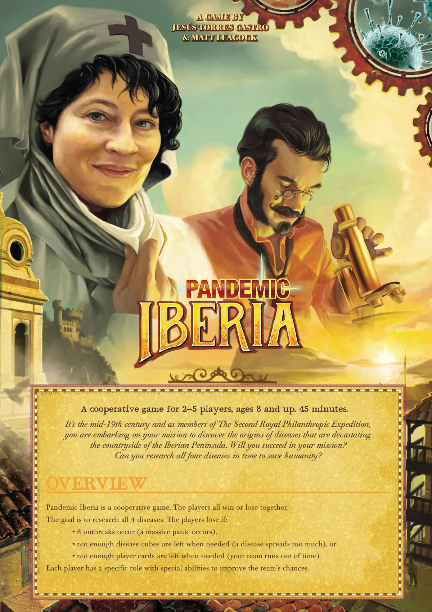
<figcaption>原版规则书 · 第 1 页（点击图片放大）</figcaption>
</figure>

<details class="mt-fold">
<summary>📝 第 1 页 AI 机翻对照（点击展开）</summary>
<div class="mt-body"><p>19世纪中叶，作为皇家慈善探险队的成员，你们正踏上使命，去发现那些正在摧毁伊比利亚半岛乡村的疾病的起源。你们会成功完成使命吗？你们能及时研究全部四种疾病以拯救人类吗？</p>

<p>一款2-5人合作游戏，适合8岁以上玩家，时长45分钟。</p>

<h2>概述</h2>

<p>伊比利亚瘟疫是一款合作游戏。所有玩家共同胜利或共同失败。</p>

<p>目标是研究全部4种疾病。玩家在以下情况下失败：</p>

<p>• 发生8次疫情爆发（引发大规模恐慌），</p>

<p>• 当需要时疾病立方体不足（疾病传播过度），或</p>

<p>• 当需要时玩家卡牌不足（团队用完时间）。</p>

<p>每位玩家都有特定角色和特殊能力，以提高团队的成功几率。</p>

<h2>游戏设计</h2>

<h2>JESÚS TORRES CASTRO</h2>

<h2>&amp; MATT LEACOCK</h2></div>
</details>

<figure>
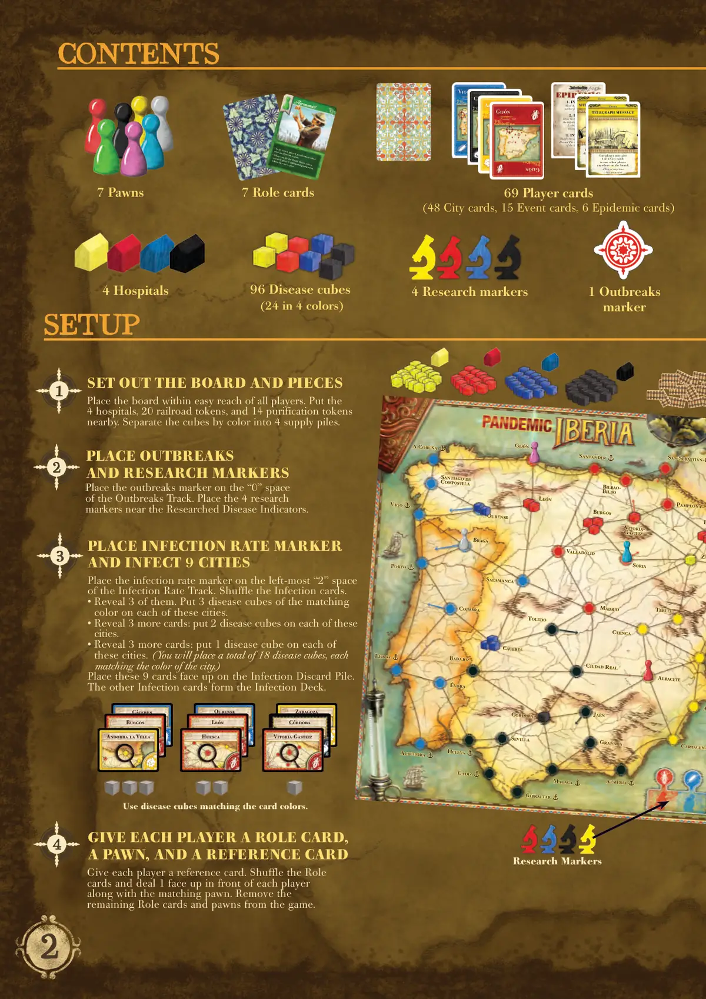
<figcaption>原版规则书 · 第 2 页（点击图片放大）</figcaption>
</figure>

<details class="mt-fold">
<summary>📝 第 2 页 AI 机翻对照（点击展开）</summary>
<div class="mt-body"><p>拉科鲁尼亚</p>

<p>圣地亚哥</p>

<p>德</p>

<p>孔波斯特拉</p>

<p>维戈</p>

<p>奥伦塞</p>

<p>布拉加</p>

<p>波尔图</p>

<p>科英布拉</p>

<p>里斯本</p>

<p>埃武拉</p>

<p>卡塞雷斯</p>

<p>巴达霍斯</p>

<p>韦尔瓦</p>

<p>塞维利亚</p>

<p>科尔多瓦</p>

<p>哈恩</p>

<p>加的斯</p>

<p>直布罗陀</p>

<p>格拉纳达</p>

<p>阿尔梅里亚</p>

<p>卡塔赫纳</p>

<p>A</p>

<p>阿尔瓦塞特</p>

<p>雷阿尔城</p>

<p>昆卡</p>

<p>特鲁埃尔</p>

<p>H</p>

<p>zA</p>

<p>索里亚</p>

<p>马德里</p>

<p>巴利亚多利德</p>

<p>布尔戈斯</p>

<p>维多利亚-</p>

<p>加斯泰斯</p>

<p>毕尔巴鄂-</p>

<p>毕尔巴鄂</p>

<p>桑坦德</p>

<p>希洪</p>

<p>莱昂</p>

<p>萨拉曼卡</p>

<p>托莱多</p>

<p>潘普洛纳</p>

<p>圣塞瓦斯蒂安-d</p>

<p>马拉加</p>

<p>阿尔布费拉</p>

<h2>设置版图和棋子</h2>

<h2>放置感染率指示物</h2>

<h2>并感染9个城市</h2>

<h2>放置爆发指示物</h2>

<h2>和研究指示物</h2>

<p>给每位玩家一张角色卡，</p>

<h2>一个棋子，和一张参考卡</h2>

<p>将感染率指示物放在感染率轨道最左边的"2"格上。洗混感染牌。</p>

<p>• 展示其中的3张。在这些城市上各放置3个匹配颜色的疾病方块。</p>

<p>• 再展示3张牌：在这些城市上各放置2个疾病方块。</p>

<p>• 再展示3张牌：在这些城市上各放置1个疾病方块。（你将总共放置18个疾病方块，每个都与城市颜色匹配。）</p>

<p>将这9张牌正面朝上放在感染弃牌堆上。</p>

<p>其余的感染牌组成感染牌库。</p>

<p>给每位玩家一张参考卡。洗混角色牌，给每位玩家发1张正面朝上，并配上对应的棋子。将剩余的角色牌和棋子从游戏中移除。</p>

<p>将爆发指示物放在爆发轨道的"0"格上。将4个研究指示物放在已研究疾病指示器附近。</p>

<p>将版图放在所有玩家容易触及的位置。将4家医院、20个铁路指示物和14个净化指示物放在附近。将方块按颜色分成4个供应堆。使用与卡牌颜色匹配的疾病方块。</p>

<p>研究指示物</p>

<h2>设置</h2>

<h2>内容</h2>

<p>7张角色卡</p>

<p>69张玩家牌</p>

<p>（48张城市牌，15张事件牌，6张流行病牌）</p>

<p>1个爆发指示物</p>

<p>7个棋子</p>

<p>维戈</p>

<p>维戈</p>

<p>建立于-150年加的斯</p>

<p>加的斯</p>

<p>建立于-1104年</p>

<h2>1. 增加</h2>

<p>将感染率指示物向前移动1格。</p>

<h2>2. 感染</h2>

<p>从感染牌库底部抽一张牌，并为该城市添加3个方块。</p>

<p>弃掉那张牌。</p>

<h2>3. 加剧</h2>

<p>洗混感染弃牌堆中的牌，并将它们放在感染牌库顶部。</p>

<p>阿利坎特</p>

<p>阿利坎特</p>

<p>建立于-324年</p>

<p>可在任何时候使用。</p>

<p>不是行动。</p>

<p>事件</p>

<p>两名玩家（版图上任意位置）可以交换1张手牌。</p>

<h2>邮件通信</h2>

<p>希洪</p>

<p>希洪</p>

<p>建立于-500年</p>

<p>可在任何时候使用。</p>

<p>不是行动。</p>

<p>事件</p>

<p>一名玩家可以给</p>

<p>版图上任意位置的另一名玩家</p>

<p>1或2张城市牌。</p>

<h2>电报消息</h2>

<p>农学家</p>

<p>•  作为行动，将1个净化指示物</p>

<p>放入相邻区域。</p>

<p>•  当你执行净水行动时，</p>

<p>你可以在该区域额外放置1个净化指示物。</p>

<p>96个疾病方块</p>

<p>（4种颜色各24个）</p>

<p>4个研究指示物</p>

<p>4家医院</p>

<p>卡塞雷斯</p>

<p>奥伦塞</p>

<p>萨拉戈萨</p>

<p>布尔戈斯</p>

<p>莱昂</p>

<p>科尔多瓦</p>

<p>安道拉城</p>

<p>韦斯卡</p>

<p>维多利亚-加斯泰斯</p></div>
</details>

<figure>
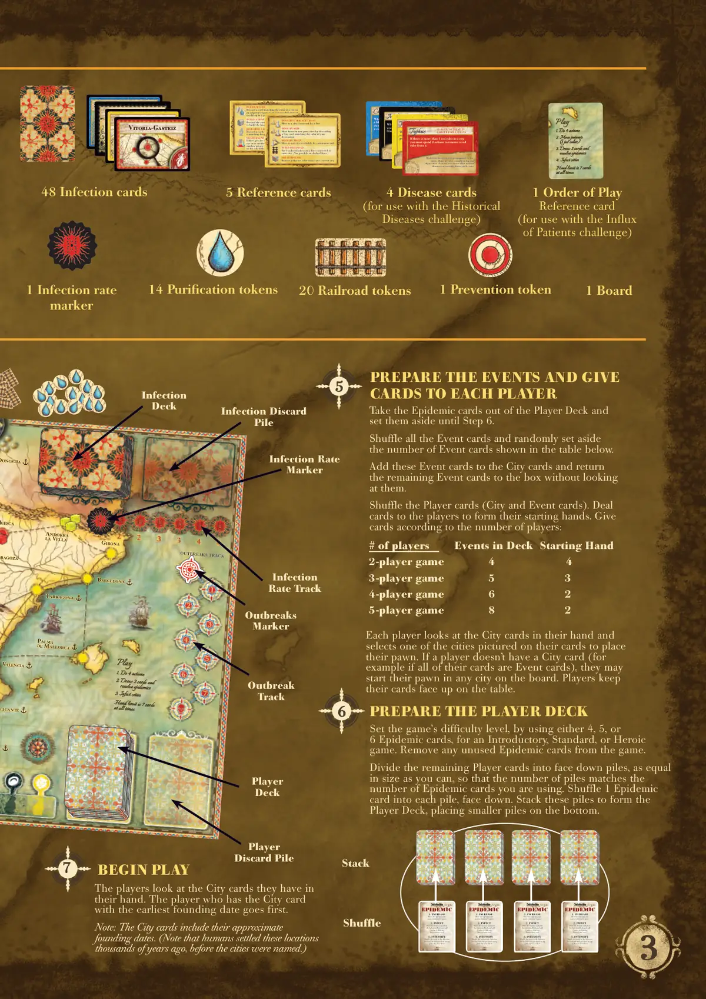
<figcaption>原版规则书 · 第 3 页（点击图片放大）</figcaption>
</figure>

<details class="mt-fold">
<summary>📝 第 3 页 AI 机翻对照（点击展开）</summary>
<div class="mt-body"><p>A</p>

<p>阿里坎特 (AliCAnte)</p>

<p>巴伦西亚 (VAlenCiA)</p>

<p>塔拉戈纳 (tArrAgonA)</p>

<p>巴塞罗那 (BArCelonA)</p>

<p>马略卡岛帕尔马 (pAlmA de mAllorCA)</p>

<p>赫罗纳 (gironA)</p>

<h2>疫情追踪</h2>

<p>安道尔 (AndorrA)</p>

<p>拉韦利亚 (lA VellA)</p>

<p>韦斯卡 (HueSCA)</p>

<p>阿拉贡 (ArAgozA)</p>

<p>多诺斯蒂亚 (donoStiA)</p>

<p>游戏流程</p>

<ol>
  <li>执行4个行动</li>
  <li>摸2张牌并</li>
</ol>

<p>处理疫情</p>

<h3>3. 感染城市</h3>

<p>手牌上限始终为7张</p>

<h2>准备玩家牌库</h2>

<h2>准备事件牌并分发给</h2>

<h2>每位玩家</h2>

<p>通过使用4、5或6张疫情卡，设置游戏的难度级别，分别为入门级、标准级或英雄级。将未使用的疫情卡从游戏中移除。</p>

<p>将剩余的玩家牌分成尽可能大小相等的面朝下的牌堆，使牌堆数量与您使用的疫情卡数量相匹配。将1张疫情卡洗入每个牌堆，面朝下。将这些牌堆堆叠形成玩家牌库，将较小的牌堆放在底部。</p>

<p>将疫情卡从玩家牌库中取出，放到一边，直到第6步。</p>

<p>洗混所有事件牌，并随机从下面表格中所示数量的事件牌中取出。将这些事件牌加入城市牌中，并将剩余的事件牌放回盒中，不要查看。</p>

<p>洗混玩家牌（城市牌和事件牌）。发牌给玩家以形成他们的起始手牌。根据玩家数量发牌：</p>

<p>每位玩家查看自己手牌中的城市牌，并选择一张牌上显示的城市放置自己的棋子。如果玩家没有城市牌（例如，如果他们的所有牌都是事件牌），他们可以将棋子放在版图上的任何城市。玩家将他们的牌面朝上放在桌上。</p>

<p>疫情爆发</p>

<p>指示物</p>

<p>疫情爆发</p>

<p>轨道</p>

<p>玩家</p>

<p>牌库</p>

<p>感染</p>

<p>牌库</p>

<p>感染弃牌</p>

<p>堆</p>

<p>感染率</p>

<p>指示物</p>

<p>感染率</p>

<p>轨道</p>

<h2>1. 增加</h2>

<p>将感染率指示物向前移动1格。</p>

<h2>2. 感染</h2>

<p>从感染牌库底摸一张牌，并为该城市添加3个方块。弃掉该牌。</p>

<h2>3. 加剧</h2>

<p>洗混感染弃牌堆中的牌，并将它们放在感染牌库的顶部。</p>

<h2>1. 增加</h2>

<p>将感染率指示物向前移动1格。</p>

<h2>2. 感染</h2>

<p>从感染牌库底摸一张牌，并为该城市添加3个方块。弃掉该牌。</p>

<h2>3. 加剧</h2>

<p>洗混感染弃牌堆中的牌，并将它们放在感染牌库的顶部。</p>

<h2>1. 增加</h2>

<p>将感染率指示物向前移动1格。</p>

<h2>2. 感染</h2>

<p>从感染牌库底摸一张牌，并为该城市添加3个方块。弃掉该牌。</p>

<h2>3. 加剧</h2>

<p>洗混感染弃牌堆中的牌，并将它们放在感染牌库的顶部。</p>

<h2>1. 增加</h2>

<p>将感染率指示物向前移动1格。</p>

<h2>2. 感染</h2>

<p>从感染牌库底摸一张牌，并为该城市添加3个方块。弃掉该牌。</p>

<h2>3. 加剧</h2>

<p>洗混感染弃牌堆中的牌，并将它们放在感染牌库的顶部。</p>

<h2>玩家数量</h2>

<p>牌库中的事件	 起始手牌</p>

<p>2人游戏</p>

<p>3人游戏</p>

<p>4人游戏</p>

<p>5人游戏</p>

<p>洗牌</p>

<p>堆叠</p>

<p>5张参考卡</p>

<p>4张疾病卡</p>

<p>（用于历史疾病挑战）</p>

<p>1张游戏顺序参考卡</p>

<p>（用于患者涌入挑战）</p>

<p>1张版图</p>

<p>1个感染率指示物</p>

<p>14个净化指示物</p>

<p>1个预防指示物</p>

<p>20个铁路指示物</p>

<p>48张感染卡</p>

<p>圣地亚哥-德孔波斯特拉</p>

<p>霍乱弧菌于1832年到达西北部的波尔图。后来它经由维戈港传入，第一次是在1833年，后来是在1853年。在连续的疫情中，约20%的人口被感染，总计超过65万人死亡。</p>

<p>当蓝色疫情爆发时，除了在每个连接距离1的城市放置一个蓝色立方体外，如果该城市没有立方体，还要在每个连接距离2的城市放置一个蓝色立方体。</p>

<p>霍乱</p>

<h2>疫情传播更远</h2>

<p>科尔多瓦</p>

<p>半岛北部没有这种疾病。大约1880年，人类了解到它是由疟原虫原生动物引起的，并通过雌性按蚊传播。如今，疟疾仍在全球范围内导致数百万人死亡。</p>

<p>当使用黑色感染时，每当你要在一个没有黑色立方体的城市中放入1个黑色立方体时，改为放入2个黑色立方体。</p>

<p>疟疾</p>

<h2>新感染更加严重</h2>

<h2>净化水源</h2>

<p>弃掉一张与相邻区域城市颜色相同的卡牌或已研究疾病的颜色相同的卡牌，为该区域添加最多2个净化指示物。</p>

<h2>建造医院</h2>

<p>弃掉一张与你当前城市颜色相同的卡牌，在该城市建造相应颜色的医院。</p>

<h2>研究疾病</h2>

<p>在相应颜色的医院弃掉5张相同颜色的卡牌。</p>

<h2>分享知识</h2>

<p>选择：将与你所在城市匹配的卡牌给另一名玩家，或从另一名玩家那里获取该卡牌。另一名玩家也必须与你同在这座城市。</p>

<h2>乘坐马车/船只移动</h2>

<p>通过线路移动到连接的城市。</p>

<h2>乘船移动</h2>

<p>通过弃掉一张与你目的地颜色相同的城市卡，在两个港口城市之间移动。</p>

<h2>乘火车移动</h2>

<p>通过连续铁路移动到任何可达的城市。</p>

<h2>建造铁路</h2>

<p>在连接你城市的线路上放置1个铁路指示物。（虚线上不可行。）</p>

<h2>治疗疾病</h2>

<p>从你当前城市移除1个疾病立方体。</p>

<p>游戏流程</p>

<ol>
  <li>执行4个行动</li>
</ol>

<h3>2. 移动患者</h3>

<p>（每种颜色1个）</p>

<ol>
  <li>抽2张牌并</li>
</ol>

<p>resolve epidemics（解决疫情）</p>

<h3>4. 感染城市</h3>

<p>手牌上限始终为7张</p>

<p>阿利坎特</p>

<p>该病毒通过埃及伊蚊传播，经常影响海港或河港城市。疫情发生在地中海和南部城市，在19世纪初尤为严重。</p>

<p>当在港口城市放置黄色立方体时，你也必须在所有相邻的港口城市放置黄色立方体。</p>

<p>黄热病</p>

<h2>港口地区</h2>

<h2>受影响更严重</h2>

<p>维多利亚-加斯泰斯（Vitoria-Gasteiz）</p>

<p>立克次氏体细菌通过虱子、螨虫、跳蚤或蜱虫传播，通常发生在大型肮脏的城市中。自然灾害后或在战争中被摧毁的城市中，它甚至更加猖獗。</p>

<p>如果一个城市中有超过1个红色立方体，你必须花费2个行动来从中移除一个红色立方体。</p>

<p>斑疹伤寒</p>

<h2>在更大人口中更难治疗</h2>

<h2>开始游戏</h2>

<p>玩家查看他们手中的城市牌。拥有最早建城日期的城市牌的玩家先开始。</p>

<p>注意：城市牌包含其大约的建城日期。（注意，人类在数千年前就定居在这些地方，当时这些城市还没有被命名。）</p>

<p>玩家</p>

<p>弃牌堆</p></div>
</details>

<figure>
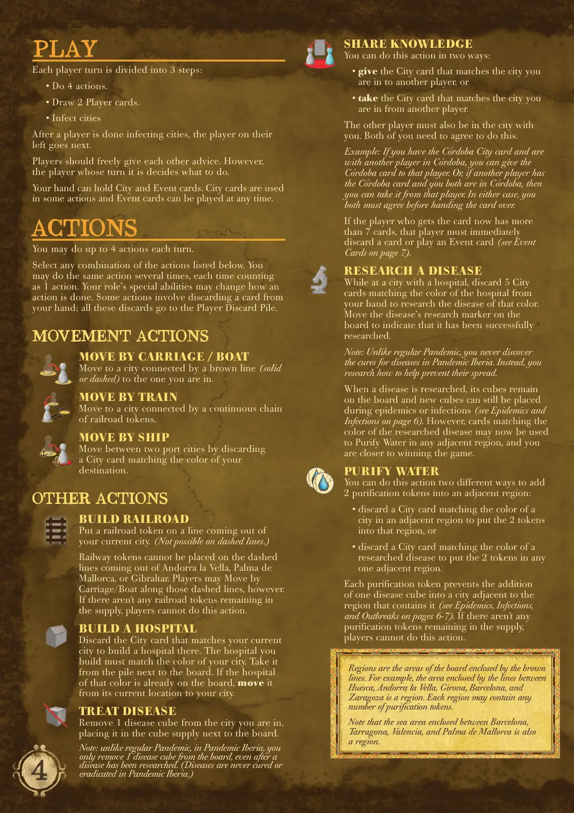
<figcaption>原版规则书 · 第 4 页（点击图片放大）</figcaption>
</figure>

<details class="mt-fold">
<summary>📝 第 4 页 AI 机翻对照（点击展开）</summary>
<div class="mt-body"><h2>游戏进行</h2>

<p>每个玩家回合分为3个步骤：</p>

<p>• 执行4个行动。</p>

<p>• 摸2张玩家卡牌。</p>

<p>• 感染城市</p>

<p>当一个玩家完成感染城市后，其左侧的玩家进行下一回合。</p>

<p>玩家可以自由地互相提供建议。然而，当前回合的玩家决定做什么。</p>

<p>你的手牌可以持有城市卡牌和事件卡牌。城市卡牌用于某些行动，事件卡牌可以在任何时候打出。</p>

<h2>行动</h2>

<p>每回合你可以执行最多4个行动。</p>

<p>从下面列出的行动中选择任意组合。你可以多次执行相同的行动，每次计为1个行动。你的角色的特殊能力可能会改变行动的执行方式。有些行动需要从手牌中弃掉一张卡牌；所有这些弃牌都进入玩家弃牌堆。</p>

<h2>移动行动</h2>

<h2>乘坐马车/船只移动</h2>

<p>移动到通过棕色线条（实线或虚线）与你所在城市相连的城市。</p>

<h2>乘坐火车移动</h2>

<p>移动到通过连续的铁路指示物链相连的城市。</p>

<h2>乘坐船只移动</h2>

<p>通过弃掉一张与你目的地颜色匹配的城市卡牌，在两个港口城市之间移动。</p>

<h2>其他行动</h2>

<h2>建造铁路</h2>

<p>在你当前城市出发的线路上放置一个铁路指示物。（虚线上不可行。）</p>

<p>铁路指示物不能放置在安道尔城、帕尔马或直布罗陀出发的虚线上。然而，玩家可以沿着这些虚线乘坐马车/船只移动。</p>

<p>如果供应中没有剩余的铁路指示物，玩家无法执行此行动。</p>

<h2>建造医院</h2>

<p>弃掉与你当前城市匹配的城市卡牌，在那里建造一座医院。你建造的医院必须与你城市的颜色匹配。从版图旁边的牌堆中取走它。如果该颜色的医院已经在版图上，将其从当前位置移动到你的城市。</p>

<h2>治疗疾病</h2>

<p>从你所在的城市移除1个疾病立方体，将其放置在版图旁边的立方体供应区中。</p>

<p>注意：与普通瘟疫疫境不同，在瘟疫疫境伊比利亚中，即使疾病已被研究，你也只从版图上移除1个疾病立方体。（在瘟疫疫境伊比利亚中，疾病永远不会被治愈或根除。）</p>

<h2>分享知识</h2>

<p>你可以通过两种方式执行此行动：</p>

<p>• 将与你所在城市匹配的城市卡牌交给另一名玩家，或</p>

<p>• 从另一名玩家那里获取与你所在城市匹配的城市卡牌。</p>

<p>另一名玩家也必须与你同在这座城市。双方都需要同意执行此操作。</p>

<p>示例：如果你有科尔多瓦城市卡牌，并且与另一名玩家同在科尔多瓦，你可以将科尔多瓦卡牌交给该玩家。或者，如果另一名玩家有科尔多瓦卡牌，而你们两人都在科尔多瓦，那么你可以从该玩家那里获取它。在任何一种情况下，你们双方都必须在移交卡牌前同意。</p>

<p>如果获得卡牌的玩家现在拥有更多</p>

<p>如果手牌超过7张，该玩家必须立即弃一张牌或打出一张事件卡（参见第7页的事件卡）。</p>

<h2>研究疾病</h2>

<p>在有医院的城市场，弃掉5张与医院颜色相同的城市牌来研究该颜色的疾病。移动版图上该疾病的 research 标记以表示已成功研究。</p>

<p>注意：与普通瘟疫疫病不同，在瘟疫疫病伊比利亚中，你永远不会发现疾病的治愈方法。相反，你研究如何帮助预防疾病的传播。</p>

<p>当一种疾病被研究后，其方块仍留在版图上，在流行病或感染期间仍可以放置新的方块（参见第6页的流行病和感染）。然而，与已研究疾病颜色匹配的牌现在可用于在任何相邻区域净化水，并且你离胜利更近了一步。</p>

<h2>净化水</h2>

<p>你可以通过两种不同的方式执行此行动，向相邻区域添加2个净化指示物：</p>

<p>• 弃掉一张与相邻区域中某城市颜色匹配的城市牌，将2个指示物放入该区域，或</p>

<p>• 弃掉一张与已研究疾病颜色匹配的城市牌，将2个指示物放入任意一个相邻区域。</p>

<p>每个净化指示物可阻止一个疾病方块进入包含该指示物的区域相邻的城市（参见第6-7页的流行病、感染和爆发）。如果没有净化指示物剩余，玩家无法执行此行动。</p>

<p>区域是由棕色线条包围的版图区域。例如，由 Huesca、Andorra la Vella、Girona、Barcelona 和 Zaragoza 之间线条包围的区域就是一个区域。每个区域可包含任意数量的净化指示物。</p>

<p>请注意，Barcelona、Tarragona、Valencia 和 Palma de Mallorca 之间包围的海域也是一个区域。</p></div>
</details>

<figure>
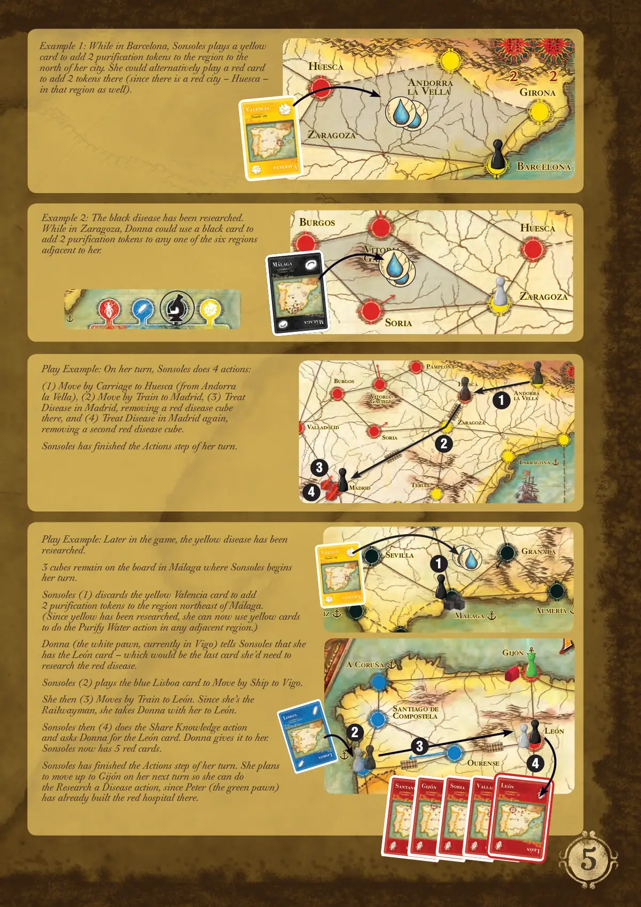
<figcaption>原版规则书 · 第 5 页（点击图片放大）</figcaption>
</figure>

<details class="mt-fold">
<summary>📝 第 5 页 AI 机翻对照（点击展开）</summary>
<div class="mt-body"><p>示例1：当在巴塞罗那时，索尔斯（Sonsoles）打出一张黄色卡牌，为其城市北边的区域添加2个净化指示物。她也可以打出一张红色卡牌在那里添加2个指示物（因为该区域也有一个红色城市——韦斯卡（Huesca））。</p>

<p>游戏示例：在她的回合中，索尔斯执行了4个行动：</p>

<p>(1) 乘坐马车移动到韦斯卡（从安道尔城（Andorra la Vella）出发），(2) 乘坐火车移动到马德里，(3) 在马德里治疗疾病，移除那里的一个红色疾病方块，以及(4) 再次在马德里治疗疾病，移除第二个红色疾病方块。</p>

<p>索尔斯已完成她回合的行动阶段。</p>

<p>游戏示例：游戏后期，黄色疾病已被研究。</p>

<p>索尔斯开始她的回合时，版图上马拉加（Málaga）仍有3个方块。</p>

<p>索尔斯(1) 弃掉黄色巴伦西亚（Valencia）卡牌，为马拉加东北边的区域添加2个净化指示物。（由于黄色已被研究，她现在可以在任何相邻区域使用黄色卡牌进行净水行动。）</p>

<p>唐娜（白色棋子，目前在维戈（Vigo））告诉索尔斯她有莱昂（León）卡牌——这将是她研究红色疾病所需的最后一张卡牌。</p>

<p>索尔斯(2) 打出蓝色里斯本（Lisboa）卡牌，乘船移动到维戈。然后她(3) 乘火车移动到莱昂。由于她是铁路工人，她带着唐娜一起到莱昂。</p>

<p>索尔斯然后(4) 进行分享知识行动，并向唐娜索要莱昂卡牌。唐娜给了她。</p>

<p>索尔斯现在有5张红色卡牌。</p>

<p>索尔斯已完成她回合的行动阶段。她计划在下一回合移动到希洪（Gijón），以便进行研究疾病行动，因为彼得（绿色棋子）已经在那里建造了红色医院。</p>

<p>示例2：黑色疾病已被研究。</p>

<p>当在萨拉戈萨（Zaragoza）时，唐娜可以使用一张黑色卡牌为其任意一个相邻的六个区域添加2个净化指示物。</p>

<p>特鲁埃尔（teruel）</p>

<p>阿拉贡（tArrAgonA）</p>

<p>安道尔城（AndorrA lA VellA）</p>

<p>韦斯卡（HueSCA）</p>

<p>萨拉戈萨（zArAgozA）</p>

<p>索里亚（SoriA）</p>

<p>巴利亚多利德（mAdrid）</p>

<p>巴利亚多利德（VAllAdolid）</p>

<p>布尔戈斯（BurgoS）</p>

<p>维多利亚-加斯泰斯（VitoriA-gASteiz）</p>

<p>潘普洛纳（pAmplonA）</p>

<p>拉科鲁尼亚（A CoruñA）</p>

<p>圣地亚哥-德孔波斯特拉（SAntiAgo de CompoStelA）</p>

<p>维戈（Vigo）</p>

<p>奥伦塞（ourenSe）</p>

<p>希洪（gijón）</p>

<p>莱昂（león）</p>

<p>桑坦德（Santander）</p>

<p>桑坦德（Santander）</p>

<p>建立于-26</p>

<p>希洪（Gijón）</p>

<p>希洪（Gijón）</p>

<p>建立于-500</p>

<p>索里亚（Soria）</p>

<p>索里亚（Soria）</p>

<p>建立于-133</p>

<p>巴利亚多利德（Valladolid）</p>

<p>巴利亚多利德（Valladolid）</p>

<p>建立于1072</p>

<p>里斯本（Lisboa）</p>

<p>里斯本（Lisboa）</p>

<p>建立于-1000</p>

<p>莱昂（León）</p>

<p>莱昂（León）</p>

<p>建立于-29</p>

<p>巴塞罗那（BArCelonA）</p>

<p>赫罗纳（gironA）</p>

<p>安道尔城（AndorrA lA VellA）</p>

<p>韦斯卡（HueSCA）</p>

<p>萨拉戈萨（zArAgozA）</p>

<p>奥尼亚（onA）</p>

<p>塞维利亚（SeVillA）</p>

<p>格拉纳达（iz grAnAdA）</p>

<p>阿尔梅里亚（AlmeríA）</p>

<p>马拉加（málAgA）</p>

<p>巴伦西亚（Valencia）</p>

<p>巴伦西亚（Valencia）</p>

<p>建立于-138</p>

<p>韦斯卡（HueSCA）</p>

<p>萨拉戈萨（zArAgozA）</p>

<p>索里亚（SoriA）</p>

<p>奥利亚（olid）</p>

<p>布尔戈斯（BurgoS）</p>

<p>维多利亚-加斯泰斯（VitoriA-gASteiz）</p>

<p>马拉加（Málaga）</p>

<p>马拉加（Málaga）</p>

<p>建立于-750</p>

<p>巴伦西亚（Valencia）</p>

<p>巴伦西亚（Valencia）</p>

<p>建立于-138</p></div>
</details>

<figure>
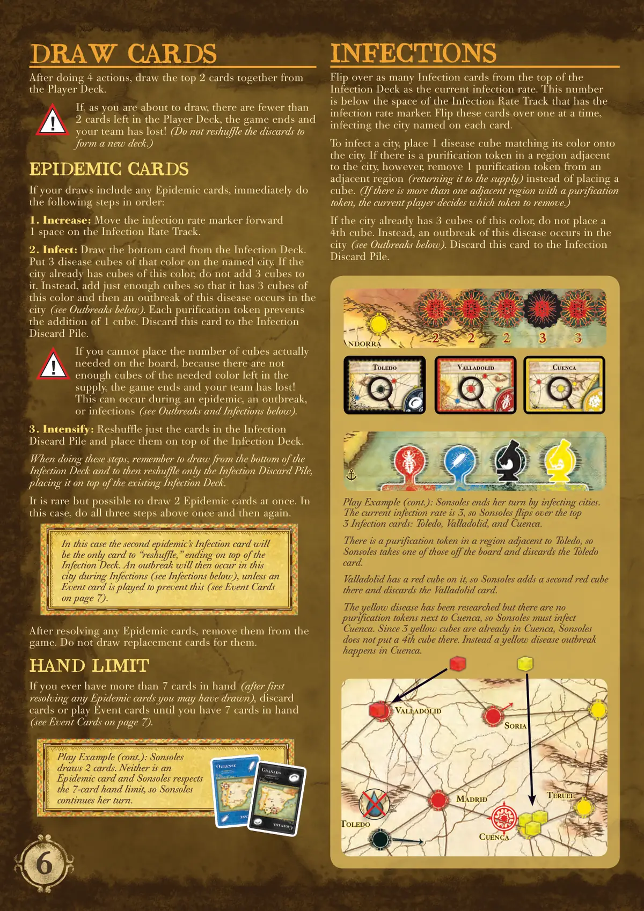
<figcaption>原版规则书 · 第 6 页（点击图片放大）</figcaption>
</figure>

<details class="mt-fold">
<summary>📝 第 6 页 AI 机翻对照（点击展开）</summary>
<div class="mt-body"><h2>感染</h2>

<p>从牌库顶翻开与当前感染率数量相同的感染卡。这个数字位于感染速率轨道上带有感染率标记的格下方。一次翻开这些卡，感染每张卡上命名的城市。</p>

<p>要感染一个城市，将一个匹配其颜色的疾病立方体放置到该城市上。然而，如果该城市相邻的区域有一个净化指示物，则不要放置立方体，而是从相邻区域移除一个净化指示物（将其返回到供应区）。（如果有多个相邻区域有净化指示物，则当前玩家决定移除哪个指示物。）</p>

<p>如果该城市已经有3个这种颜色的立方体，不要放置第4个立方体。相反，该疾病在该城市爆发（见下文爆发）。将这张卡牌弃置到感染弃牌堆。</p>

<p>托莱多 (Toledo)</p>

<p>巴利亚多利德 (Valladolid)</p>

<p>昆卡 (Cuenca)</p>

<p>游戏示例（续）：索尔索莱斯（Sonsoles）通过感染城市结束她的回合。当前感染率为3，因此索尔索莱斯翻开了顶部的3张感染卡：托莱多、巴利亚多利德和昆卡。</p>

<p>托莱多相邻的区域有一个净化指示物，因此索尔索莱斯从版图上取走其中一个，并弃置托莱多卡。</p>

<p>巴利亚多利德上已经有一个红色立方体，因此索尔索莱斯在那里添加第二个红色立方体，并弃置巴利亚多利德卡。</p>

<p>黄色疾病已被研究，但昆卡旁边没有净化指示物，因此索尔索莱斯必须感染昆卡。由于昆卡已经有3个黄色立方体，索尔索莱斯不在那里放置第4个立方体。相反，黄色疾病在昆卡爆发。</p>

<h2>抽牌</h2>

<p>完成4个行动后，从玩家牌库顶一起抽取2张牌。</p>

<p>如果你即将抽牌时，玩家牌库中剩余的牌少于2张，游戏结束，你的团队失败！（不要将弃牌重新洗牌形成新牌库。）</p>

<h2>瘟疫卡</h2>

<p>如果你的抽牌中包含任何瘟疫卡，立即按顺序执行以下步骤：</p>

<h3>1. 提升：将感染率标记在感染速率轨道上向前移动1格。</h3>

<ol>
  <li>感染：从感染牌库底抽一张牌。将3个该颜色的疾病立方体放置到命名的城市上。如果该城市已经有这种颜色的立方体，不要为其添加3个立方体。相反，只添加足够的立方体使其拥有3个该颜色的立方体，然后该疾病在该城市爆发（见下文爆发）。每个净化指示物阻止添加1个立方体。将这张卡牌弃置到感染弃牌堆。</li>
</ol>

<p>如果你无法在版图上放置实际需要的立方体数量，因为供应区中没有足够所需颜色的立方体，游戏结束，你的团队失败！</p>

<p>这可能在瘟疫期间、爆发期间或感染期间发生（见下文爆发和感染）。</p>

<h3>3. 强化：仅重新洗牌感染弃牌堆中的卡牌，并将它们放在牌库顶上。</h3>

<p>执行这些步骤时，请记住从牌库底部摸牌，然后仅重新洗牌感染弃牌堆，将其放在现有的牌库顶上。</p>

<p>虽然罕见但有可能一次抽到2张疫情卡。在这种情况下，执行上述三个步骤一次，然后再执行一次。</p>

<p>在解决任何疫情卡后，将它们从游戏中移除。不要为它们替换抽牌。</p>

<h2>手牌上限</h2>

<p>如果你手牌超过7张（在先解决你可能抽到的任何疫情卡之后），弃牌或打出事件卡，直到你的手牌为7张（参见第7页的事件卡）。</p>

<p>在这种情况下，第二个疫情的感染卡将是唯一一张"重新洗牌"的卡，最终放在牌库顶上。在感染阶段，这座城市将爆发疫情（参见下文的感染），除非打出事件卡来阻止这种情况（参见第7页的事件卡）。</p>

<p>游戏示例（续）：Sonsoles抽了2张牌。都不是疫情卡，且Sonsoles遵守7张手牌上限，因此Sonsoles继续她的回合。</p>

<p>Ourense</p>

<p>Ourense</p>

<p>建立于 –25</p>

<p>Granada</p>

<p>Granada</p>

<p>建立于 –550</p>

<p>AndorrA</p>

<p>V</p>

<p>CuenCA</p>

<p>teruel</p>

<p>SoriA</p>

<p>mAdrid</p>

<p>VAllAdolid</p>

<p>toledo</p></div>
</details>

<figure>
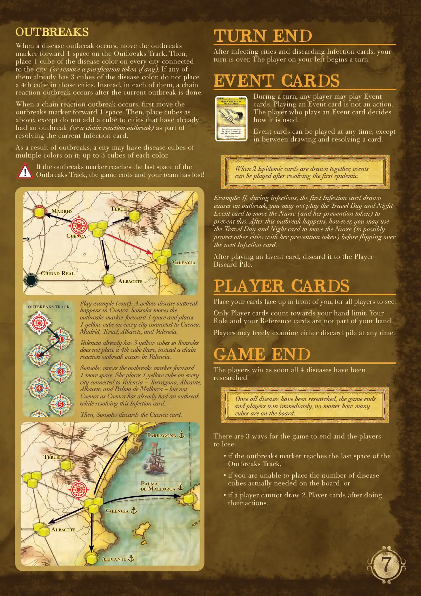
<figcaption>原版规则书 · 第 7 页（点击图片放大）</figcaption>
</figure>

<details class="mt-fold">
<summary>📝 第 7 页 AI 机翻对照（点击展开）</summary>
<div class="mt-body"><h2>疫情爆发</h2>

<p>当疫情爆发发生时，将疫情爆发指示物在疫情爆发轨道上向前移动1格。然后，在连接到该城市的每个城市上放置1个该疾病颜色的方块（如果有的话，则移除一个净化指示物）。如果其中任何城市已经有3个该疾病颜色的方块，不要在这些城市放置第4个方块。相反，在每一个这样的城市中，在当前疫情爆发完成后，会发生连锁反应爆发。</p>

<p>当发生连锁反应爆发时，首先将疫情爆发指示物向前移动1格。然后，如上所述放置方块，但不要在已经因解决当前感染卡而爆发过（或发生过连锁反应爆发）的城市中添加方块。</p>

<p>由于疫情爆发，一个城市上可能有多种颜色的疾病方块；每种颜色最多3个方块。</p>

<p>如果疫情爆发指示物到达疫情爆发轨道的最后一格，游戏结束，你的团队失败了！</p>

<h2>回合结束</h2>

<p>在感染城市并弃置感染卡后，你的回合结束。你左边的玩家开始一个回合。</p>

<h2>事件卡</h2>

<p>在回合中，任何玩家都可以打出事件卡。打出事件卡不是一种行动。</p>

<p>打出事件卡的玩家决定如何使用它。</p>

<p>事件卡可以在任何时间打出，但在抽牌和解决卡牌之间除外。</p>

<p>示例：如果在感染阶段，第一张抽出的感染卡导致疫情爆发，你不能打出日夜旅行事件卡来移动护士（及其预防指示物）以阻止这次爆发。然而，这次爆发发生后，你可以在翻开下一张感染卡之前，使用日夜旅行卡移动护士（可能用她的预防指示物保护其他城市）。</p>

<p>打出事件卡后，将其弃置到玩家弃牌堆。</p>

<h2>玩家卡</h2>

<p>将你的牌面朝上放在你面前，所有玩家都可以看到。</p>

<p>只有玩家卡计入你的手牌上限。你的角色卡和参考卡不属于你的手牌。</p>

<p>玩家可以随时自由检查任何一个弃牌堆。</p>

<h2>游戏结束</h2>

<p>一旦所有4种疾病都被研究出来，玩家就获胜。</p>

<p>游戏结束且玩家失败有3种方式：</p>

<p>• 如果疫情爆发指示物到达疫情爆发轨道的最后一格，</p>

<p>• 如果你无法在版图上放置实际需要的疾病方块数量，或者</p>

<p>• 如果玩家在完成行动后无法抽到2张玩家卡。</p>

<p>游戏示例（续）：在昆卡发生了一次黄色疾病爆发。索尔索莱斯将疫情爆发指示物向前移动1格，并在连接到昆卡的每个城市上放置1个黄色方块：马德里、特鲁埃尔、阿尔瓦塞特和巴伦西亚。</p>

<p>巴伦西亚已经有3个黄色方块，所以索尔索莱斯不在那里放置第4个方块，而是在巴伦西亚发生了一次连锁反应爆发。</p>

<p>索尔索莱斯将疫情爆发指示物向前移动</p>

<p>1个空间。她在每个与瓦伦西亚(Valencia)相连的城市——塔拉戈纳(Tarragona)、阿利坎特(Alicante)、阿尔瓦塞特(Albacete)和马略卡岛帕尔马(Palma de Mallorca)——放置1个黄色立方体，但不包括昆卡(Cuenca)，因为在处理这张感染卡时昆卡已经爆发过。</p>

<p>然后，索索尔斯(Sonsoles)弃置昆卡卡牌。</p>

<p>可在任何时候使用。</p>

<p>不是行动。</p>

<p>事件</p>

<p>从玩家弃牌堆中拿取1张事件卡并立即使用。</p>

<h2>当计划美好时</h2>

<p>当同时抽出2张流行病卡时，可以在解决第一个流行病后使用事件卡。</p>

<p>一旦所有疾病都被研究出来，游戏立即结束，玩家获胜，无论版图上有多少个立方体。</p>

<h2>爆发追踪</h2>

<p>瓦伦西亚(Valencia)</p>

<p>阿尔瓦塞特(Albacete)</p>

<p>雷阿尔城(Ciudad Real)</p>

<p>昆卡(Cuenca)</p>

<p>特鲁埃尔(Teruel)</p>

<p>马德里(Madrid)</p>

<p>阿利坎特(Alicante)</p>

<p>瓦伦西亚(Valencia)</p>

<p>阿尔瓦塞特(Albacete)</p>

<p>特鲁埃尔(Teruel)</p>

<p>塔拉戈纳(Tarragona)</p>

<p>马略卡岛帕尔马(Palma de Mallorca)</p></div>
</details>

<figure>
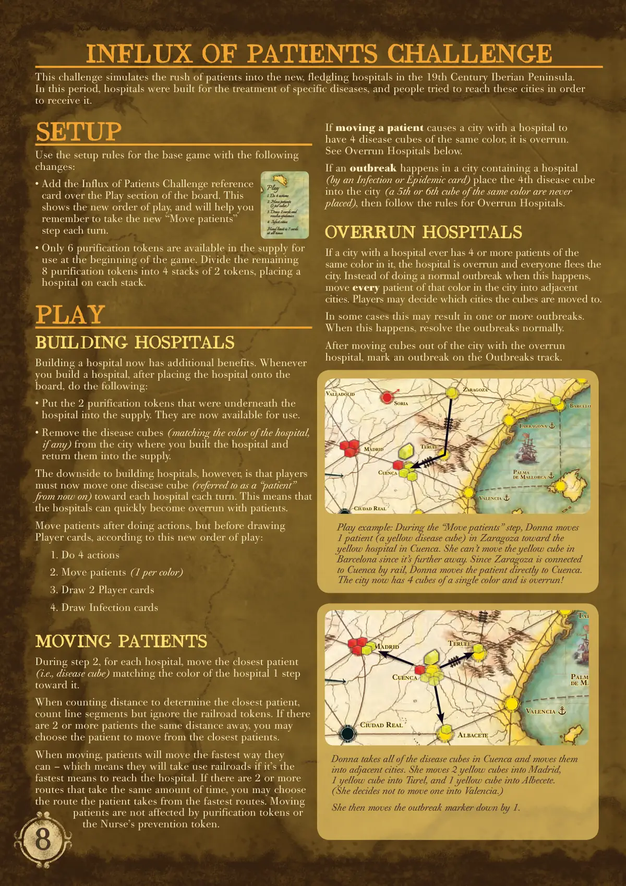
<figcaption>原版规则书 · 第 8 页（点击图片放大）</figcaption>
</figure>

<details class="mt-fold">
<summary>📝 第 8 页 AI 机翻对照（点击展开）</summary>
<div class="mt-body"><h2>设置</h2>

<p>使用基础游戏的设置规则，但有以下变更：</p>

<p>• 将"患者涌入"挑战参考卡放在版图的"游戏"区域上方。这显示了新的游戏顺序，并帮助你记住在每个回合执行新的"移动患者"步骤。</p>

<p>• 游戏开始时，供应中只有6个净化指示物可用。将剩余的8个净化指示物分成4堆，每堆2个指示物，并在每堆上放置一个医院。</p>

<h2>游戏进行</h2>

<h2>建造医院</h2>

<p>建造医院现在有额外的好处。每当建造医院时，在将医院放到版图上后，执行以下操作：</p>

<p>• 将医院下面的2个净化指示物放入供应。它们现在可供使用。</p>

<p>• 从你建造医院的城市中移除疾病立方体（如果有，颜色与医院匹配），并将它们放回供应。</p>

<p>然而，建造医院的缺点是，玩家现在必须在每个回合将一个疾病立方体（从现在起称为"患者"）向每个医院移动。这意味着医院很快就会被患者淹没。</p>

<p>根据新的游戏顺序，在执行行动后、但在摸玩家卡牌前移动患者：</p>

<ol>
  <li>执行4个行动</li>
  <li>移动患者（每种颜色1个）</li>
  <li>摸2张玩家卡牌</li>
</ol>

<h3>4. 感染卡牌</h3>

<h2>移动患者</h2>

<p>在第2步中，对于每个医院，将最接近的（即疾病立方体）与医院颜色匹配的患者向医院移动1步。</p>

<p>在计算距离以确定最近的患者时，计算线段但忽略铁路指示物。如果有2个或更多患者距离相同，你可以从最近的患者中选择要移动的患者。</p>

<p>移动时，患者会以最快的方式移动——这意味着如果铁路是到达医院的最快方式，他们会使用铁路。如果有2条或更多路线花费相同的时间，你可以从最快的路线中选择患者所走的路线。移动的患者不受净化指示物或护士的预防指示物的影响。</p>

<p>如果移动患者导致一个有医院的城市中有4个相同颜色的疾病立方体，该医院被淹没。参见下文的"被淹没的医院"。</p>

<p>如果在一个包含医院的城市发生疫情（通过感染卡牌或流行病卡牌），将第4个疾病立方体放入该城市（永远不会放置第5个或第6个相同颜色的立方体），然后遵循"被淹没的医院"的规则。</p>

<h2>被淹没的医院</h2>

<p>如果一个有医院的城市中有4个或更多相同颜色的患者，医院被淹没，所有人都逃离该城市。发生这种情况时，不执行正常的疫情爆发，而是将该城市中所有该颜色的患者移动到相邻的城市。</p>

<h2>患者涌入挑战</h2>

<p>这个挑战模拟了19世纪伊比利亚半岛上新建的、初具规模的医院中患者涌入的情况。</p>

<p>在这个时期，医院是为治疗特定疾病而建造的，人们会努力前往这些城市以接受治疗。</p>

<p>瓦伦西亚 (VALENCIA)</p>

<p>雷阿尔城 (CIUDAD REAL)</p>

<p>昆卡 (CUENCA)</p>

<p>特鲁埃尔 (TERUEL)</p>

<p>塔拉戈纳 (TARRAGONA)</p>

<p>巴塞罗那 (BARCELONA)</p>

<p>马略卡岛帕尔马 (PALMA DE MALLORCA)</p>

<p>萨拉戈萨 (ZARAGOZA)</p>

<p>索里亚 (SORIA)</p>

<p>马德里 (MADRID)</p>

<p>巴利亚多利德 (VALLADOLID)</p>

<p>游戏示例：在"移动患者"步骤中，唐娜将1名患者（一个黄色疾病方块）从萨拉戈萨向昆卡的黄色医院移动。她无法移动巴塞罗那的黄色方块，因为它距离更远。由于萨拉戈萨通过铁路与昆卡相连，唐娜将患者直接移动到昆卡。该城市现在有4个同颜色的方块，已被攻陷！唐娜拿走昆卡所有的疾病方块，并将它们移动到相邻城市。她将2个黄色方块移动到马德里，1个黄色方块移动到特鲁埃尔，1个黄色方块移动到阿尔瓦塞特。（她决定不移动一个到瓦伦西亚。）然后她将疫情标记向下移动1格。</p>

<p>游戏</p>

<ol>
  <li>执行4个行动</li>
</ol>

<h3>2. 移动患者</h3>

<p>（每种颜色1个）</p>

<ol>
  <li>抽2张牌并</li>
</ol>

<p>处理疫情</p>

<h3>4. 感染城市</h3>

<p>手牌上限始终为7张</p>

<p>瓦伦西亚 (VALENCIA)</p>

<p>阿尔瓦塞特 (ALBACETE)</p>

<p>雷阿尔城 (CIUDAD REAL)</p>

<p>昆卡 (CUENCA)</p>

<p>特鲁埃尔 (TERUEL)</p>

<p>塔拉戈纳 (TARRAGONA)</p>

<p>马略卡岛帕尔马 (PALMA DE MALLORCA)</p>

<p>马德里 (MADRID)</p></div>
</details>

<figure>
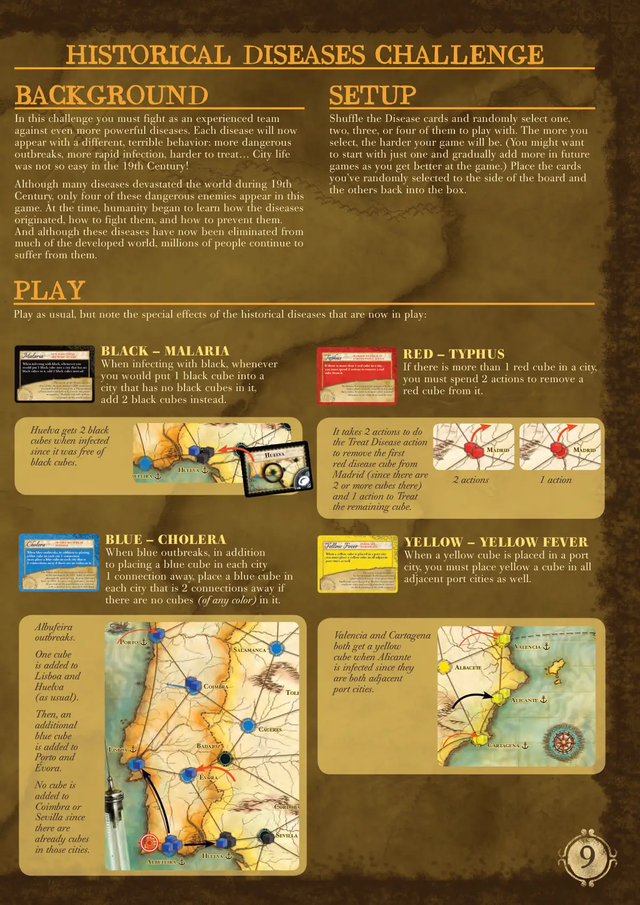
<figcaption>原版规则书 · 第 9 页（点击图片放大）</figcaption>
</figure>

<details class="mt-fold">
<summary>📝 第 9 页 AI 机翻对照（点击展开）</summary>
<div class="mt-body"><h2>历史疾病挑战</h2>

<h2>背景</h2>

<p>在这个挑战中，你必须作为一个经验丰富的团队对抗更加强大的疾病。每种疾病现在将表现出不同的、可怕的行为：更危险的爆发、更快速的感染、更难治疗……19世纪的城市生活并不那么容易！</p>

<p>尽管许多疾病在19世纪期间摧毁了世界，但只有这四种危险的敌人出现在本游戏中。当时，人类开始了解疾病的起源、如何对抗它们以及如何预防它们。尽管这些疾病现在已被世界上许多发达地区消灭，但数百万人仍然继续遭受它们的折磨。</p>

<h2>设置</h2>

<p>洗混疾病卡牌并随机选择一张、两张、三张或四张进行游戏。你选择的越多，游戏就越困难。（你可能想只从一张开始，随着你游戏技巧的提高，在未来的游戏中逐渐增加更多。）将你随机选中的卡牌放到版图旁边，其余的放回盒中。</p>

<p>霍乱弧菌细菌于1832年到达西北部的波尔图。后来它经由维戈港传入，第一次是在1833年，后来是在1853年。在连续的流行病中，约20%的人口被感染，总计超过65万人死亡。</p>

<p>当蓝色疾病爆发时，除了在每个相距1连接的城市放置一个蓝色立方体外，如果某个城市中没有立方体，还要在相距2连接的城市中放置一个蓝色立方体。</p>

<p>霍乱</p>

<h2>爆发进一步扩散</h2>

<h2>蓝色 - 霍乱</h2>

<p>当蓝色疾病爆发时，除了在每个相距1连接的城市放置一个蓝色立方体外，如果某个城市中没有（任何颜色的）立方体，还要在相距2连接的城市中放置一个蓝色立方体。</p>

<p>阿尔布费拉爆发。</p>

<p>一个立方体被添加到</p>

<p>里斯本和韦尔瓦</p>

<p>（如常）。</p>

<p>然后，一个额外的</p>

<p>蓝色立方体被添加到</p>

<p>波尔图和埃武拉。</p>

<p>科英布拉或塞维利亚</p>

<p>没有添加立方体，因为</p>

<p>那些城市中已经有立方体了。</p>

<p>波尔图</p>

<p>科英布拉</p>

<p>里斯本</p>

<p>埃武拉</p>

<p>卡塞雷斯</p>

<p>巴达霍斯</p>

<p>韦尔瓦</p>

<p>塞维利亚</p>

<p>科尔多瓦</p>

<p>萨拉曼卡</p>

<p>托莱多</p>

<p>阿尔布费拉</p>

<p>该病毒通过埃及伊蚊传播，</p>

<p>经常影响海港或河港城市。</p>

<p>爆发集中在地中海和南部城市，</p>

<p>并在19世纪初尤为严重。</p>

<p>当黄色立方体被放置在港口城市时，</p>

<p>你也必须在所有相邻的港口城市中放置一个黄色立方体。</p>

<p>黄热病</p>

<h2>港口遭受</h2>

<h2>更严重打击</h2>

<h2>黄色 - 黄热病</h2>

<p>当黄色立方体被放置在港口城市时，你也必须在所有相邻的港口城市中放置一个黄色立方体。</p>

<p>当阿利坎特被感染时，</p>

<p>巴伦西亚和卡塔赫纳</p>

<p>都获得一个黄色立方体，</p>

<p>因为它们都是相邻的港口城市。</p>

<p>卡塔赫纳</p>

<p>阿利坎特</p>

<p>巴伦西亚</p>

<p>阿尔瓦塞特</p>

<p>半岛的北部</p>

<p>摆脱这种疾病。大约在1880年，人类了解到它是由一种疟原虫原生动物引起的，并通过按蚊传播。如今，疟疾仍然在全球范围内导致数百万人死亡。</p>

<p>当使用黑色感染时，每当你要向一个没有黑色方块的城市放入1个黑色方块时，改为放入2个黑色方块。</p>

<p>疟疾</p>

<h2>新感染</h2>

<h2>更加严重</h2>

<h2>黑色 - 疟疾</h2>

<p>当使用黑色感染时，每当你要向一个没有黑色方块的城市放入1个黑色方块时，改为放入2个黑色方块。</p>

<p>由于韦尔瓦没有黑色方块，当它被感染时会获得2个黑色方块。</p>

<p>韦尔瓦</p>

<p>塞维利亚</p>

<p>科尔多瓦</p>

<p>布费拉</p>

<p>韦尔瓦</p>

<h2>游戏进行</h2>

<p>照常进行游戏，但请注意现在正在进行的这些历史疾病的特殊效果：</p>

<p>立克次氏体细菌通过虱子、螨虫、跳蚤或蜱虫传播，通常在大而肮脏的城市中。自然灾害后或被战争摧毁的城市中，它更加猖獗。</p>

<p>如果一个城市中有超过1个红色方块，你必须花费2个行动来移除其中的1个红色方块。</p>

<p>斑疹伤寒</p>

<h2>在更大人口中</h2>

<h2>更难治疗</h2>

<h2>红色 - 斑疹伤寒</h2>

<p>如果一个城市中有超过1个红色方块，你必须花费2个行动来移除其中的1个红色方块。</p>

<p>需要2个行动来执行"治疗疾病"行动以移除马德里的第一个红色疾病方块（因为那里有2个或更多方块），以及1个行动来治疗剩余的方块。</p>

<p>马德里</p>

<p>马德里</p>

<p>2个行动</p>

<p>1个行动</p></div>
</details>

<figure>
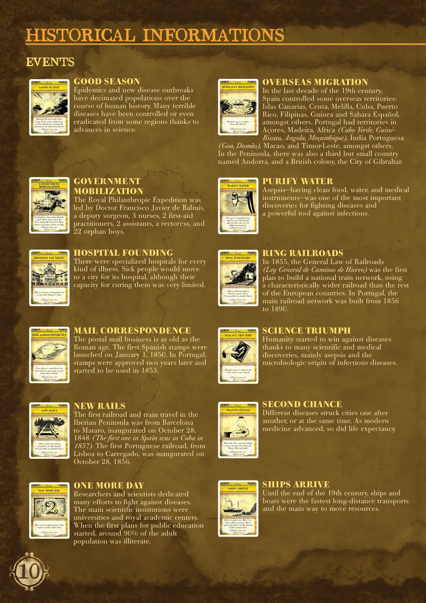
<figcaption>原版规则书 · 第 10 页（点击图片放大）</figcaption>
</figure>

<details class="mt-fold">
<summary>📝 第 10 页 AI 机翻对照（点击展开）</summary>
<div class="mt-body"><h2>历史信息</h2>

<p>随时使用。</p>

<p>不是行动。</p>

<p>事件</p>

<h2>好季节</h2>

<p>在下一个感染阶段，只抽取1张感染牌，并从牌库底部抽取。</p>

<h2>好季节</h2>

<p>流行病和新疾病爆发在人类历史上已使人口大量减少。多亏了科学的进步，许多可怕的疾病已在某些地区得到控制甚至根除。</p>

<p>随时使用。</p>

<p>不是行动。</p>

<p>事件</p>

<p>每位玩家可以免费移动一次自己的棋子，使用他们选择的方式：马车、火车或船只。</p>

<h2>政府</h2>

<h2>动员</h2>

<h2>政府</h2>

<h2>动员</h2>

<p>皇家慈善探险队由外科医生弗朗西斯科·哈维尔·德·巴尔米斯领导，他带领了3名护士、2名急救从业者、2名助手、一名女院长和22名孤儿男孩。</p>

<p>随时使用。</p>

<p>不是行动。</p>

<p>事件</p>

<p>将一座医院放置或移动到一个颜色匹配的城市。</p>

<h2>医院建立</h2>

<h2>医院建立</h2>

<p>每种疾病都有专门的医院。病人会搬到有医院的城市，尽管这些医院治愈他们的能力非常有限。</p>

<p>随时使用。</p>

<p>不是行动。</p>

<p>事件</p>

<p>两名玩家（版图上任意位置）可以交换1张手牌。</p>

<h2>邮件通信</h2>

<h2>邮件通信</h2>

<p>邮政业务的历史与罗马帝国一样古老。西班牙第一批邮票于1850年1月1日发行。葡萄牙在两年后批准了邮票，并于1853年开始使用。</p>

<p>随时使用。</p>

<p>不是行动。</p>

<p>事件</p>

<p>在版图上任意位置添加2个铁路指示物。</p>

<p>（不能在虚线上使用。）</p>

<h2>新铁路</h2>

<h2>新铁路</h2>

<p>伊比利亚半岛的第一条铁路和火车旅行是从巴塞罗那到马塔罗，于1848年10月28日开通（西班牙的第一条铁路是在1837年的古巴）。葡萄牙的第一条铁路，从里斯本到卡雷加多，于1856年10月28日开通。</p>

<p>随时使用。</p>

<p>不是行动。</p>

<p>事件</p>

<h2>多一天</h2>

<p>当前玩家在本回合可以再多执行2个行动。</p>

<h2>多一天</h2>

<p>研究人员和科学家为对抗疾病付出了巨大努力。主要的科学机构是大学和皇家学术中心。当最初的公共教育计划开始时，约90%的成年人是文盲。</p>

<p>随时使用。</p>

<p>不是行动。</p>

<p>事件</p>

<h2>海外移民</h2>

<p>从版图上移除最多2个疾病方块。</p>

<h2>海外移民</h2>

<p>在19世纪的最后十年，西班牙控制了一些海外领土：加那利群岛、休达、梅利利亚、古巴、波多黎各、菲律宾、几内亚和西属撒哈拉等。葡萄牙在亚速尔群岛、马德拉岛、非洲（佛得角、几内亚比绍、安哥拉、莫桑比克）、葡属印度（果阿、达曼）、澳门和东帝汶等地拥有领土。</p>

<p>在半岛上，还有一个名为安道尔(Andorra)的第三小国，以及一个英国殖民地——直布罗陀市(Gibraltar City)。</p>

<p>可在任何时候使用。</p>

<p>非行动卡。</p>

<p>事</p>

<p>件</p>

<p>将最多2个净化指示物放到版图上，放入一个或两个不同的区域中。</p>

<h2>净化水源</h2>

<h2>净化水源</h2>

<p>无菌术——拥有清洁的食物、水和医疗仪器——是抗击疾病最重要的发现之一，也是对抗感染的有力工具。</p>

<p>可在任何时候使用。</p>

<p>非行动卡。</p>

<p>事</p>

<p>件</p>

<p>在港口城市之间添加3条铁路指示物。</p>

<p>（虚线上不可行。）</p>

<h2>铺设铁路</h2>

<h2>铺设铁路</h2>

<p>1855年，铁路总法(Ley General de Caminos de Hierro)是首个建设全国铁路网络的计划，采用了比欧洲其他国家更宽的铁路。在葡萄牙，主要铁路网络建于1856年至1890年间。</p>

<p>可在任何时候使用。</p>

<p>非行动卡。</p>

<p>事</p>

<p>件</p>

<p>从一个区域中移除每个城市最多1个方块。</p>

<h2>科学胜利</h2>

<h2>科学胜利</h2>

<p>由于许多科学和医学发现，人类开始战胜疾病，主要得益于无菌术和传染病的微生物起源。</p>

<p>可在任何时候使用。</p>

<p>非行动卡。</p>

<p>事</p>

<p>件</p>

<p>从玩家弃牌堆中拿取一张与你当前城市匹配的城市卡。</p>

<h2>重来一次</h2>

<h2>重来一次</h2>

<p>不同的疾病接连袭击城市，或同时爆发。随着现代医学的进步，人类寿命也随之延长。</p>

<p>可在任何时候使用。</p>

<p>非行动卡。</p>

<p>事</p>

<p>件</p>

<p>选择一个港口城市。将1个或多个玩家棋子从版图上的任何位置（经允许）移动到那里。</p>

<h2>船只抵达</h2>

<h2>船只抵达</h2>

<p>直到19世纪末，船只和船舶是最快的长途运输工具，也是资源运输的主要方式。</p>

<h2>事件卡</h2></div>
</details>

<figure>
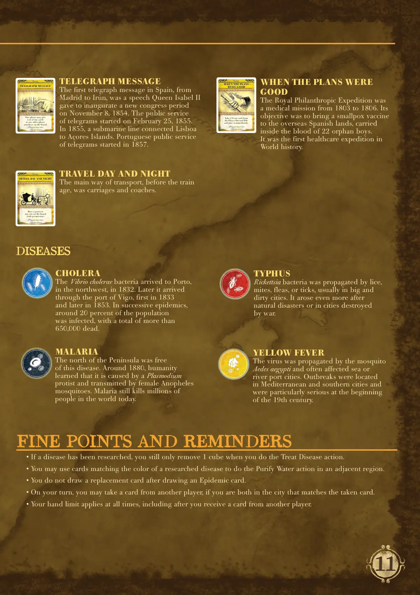
<figcaption>原版规则书 · 第 11 页（点击图片放大）</figcaption>
</figure>

<details class="mt-fold">
<summary>📝 第 11 页 AI 机翻对照（点击展开）</summary>
<div class="mt-body"><h2>细节与提醒</h2>

<p>• 如果一种疾病已被研究，你执行治疗疾病行动时仍然只移除1个方块。</p>

<p>• 你可以使用与已研究疾病颜色匹配的卡牌，在相邻区域执行净化水行动。</p>

<p>• 抽到流行病卡后，你不抽 replacement card（替换卡）。</p>

<p>• 在你的回合，如果你和另一位玩家都在与所抽卡牌匹配的城市，你可以从另一位玩家那里获得一张卡牌。</p>

<p>• 你的手牌限制始终适用，包括从另一位玩家那里获得卡牌后。</p>

<p>随时使用。</p>

<p>非行动。</p>

<p>事</p>

<p>件</p>

<p>一位玩家可以给</p>

<p>另一位玩家1或2张城市卡牌，</p>

<p>在版图上的任何位置。</p>

<h2>电报信息</h2>

<h2>电报信息</h2>

<p>西班牙的第一封电报，从</p>

<p>马德里到伊伦，是伊莎贝拉二世女王</p>

<p>在1854年11月8日为</p>

<p>新国会时期开幕发表的演讲。</p>

<p>电报公共服务始于1855年2月25日。</p>

<p>1855年，一条海底线路连接了</p>

<p>里斯本和亚速尔群岛。</p>

<p>葡萄牙的电报公共服务始于1857年。</p>

<p>随时使用。</p>

<p>非行动。</p>

<p>事</p>

<p>件</p>

<p>将一个棋子移动到</p>

<p>版图上的任何城市</p>

<p>（需获得许可）。</p>

<h2>日夜兼程</h2>

<h2>日夜兼程</h2>

<p>在火车时代之前，</p>

<p>主要的交通方式是马车和驿车。</p>

<p>随时使用。</p>

<p>非行动。</p>

<p>事</p>

<p>件</p>

<p>从玩家弃牌堆中</p>

<p>拿取1张事件卡牌</p>

<p>并立即使用。</p>

<h2>当计划</h2>

<h2>还美好时</h2>

<h2>当计划</h2>

<h2>还美好时</h2>

<p>皇家慈善探险队是</p>

<p>一场从1803年到1806年的医疗任务。</p>

<p>其目标是将天花疫苗</p>

<p>带到西班牙海外领地，疫苗</p>

<p>装在22名孤儿男孩的血液中被运送。</p>

<p>这是世界历史上第一次医疗探险。</p>

<h2>霍乱</h2>

<p>霍乱弧菌于1832年到达</p>

<p>西北部的波尔图。后来它通过</p>

<p>维戈港口进入，第一次是1833年，</p>

<p>后来是1853年。在连续的疫情中，</p>

<p>约20%的人口被感染，</p>

<p>总计超过650,000人死亡。</p>

<h2>疟疾</h2>

<p>半岛北部没有这种疾病。</p>

<p>大约在1880年，人类了解到</p>

<p>它是由疟原虫原生动物引起的，</p>

<p>并通过按蚊传播。</p>

<p>疟疾今天仍在全世界</p>

<p>导致数百万人死亡。</p>

<h2>斑疹伤寒</h2>

<p>立克次氏体细菌通过虱子、</p>

<p>螨虫、跳蚤或蜱虫传播，</p>

<p>通常在大而肮脏的城市中。</p>

<p>自然灾害后或在战争</p>

<p>摧毁的城市中，它更加猖獗。</p>

<h2>黄热病</h2>

<p>病毒通过埃及伊蚊传播，</p>

<p>经常影响海港或河港城市。</p>

<p>疫情发生在地中海和南部城市，</p>

<p>在19世纪初尤为严重。</p>

<h2>疾病</h2></div>
</details>

<figure>
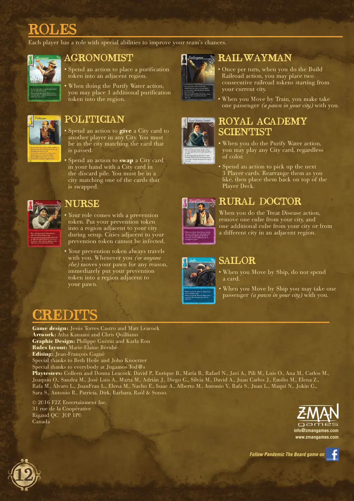
<figcaption>原版规则书 · 第 12 页（点击图片放大）</figcaption>
</figure>

<details class="mt-fold">
<summary>📝 第 12 页 AI 机翻对照（点击展开）</summary>
<div class="mt-body"><h2>角色</h2>

<p>每位玩家都有一个角色，拥有特殊能力来提高你们团队的胜算。</p>

<p>农学家</p>

<p>• 作为一个行动，将1个净化指示物放入相邻区域。</p>

<p>• 当你执行净水行动时，你可以在该区域额外放置1个净化指示物。</p>

<h2>农学家</h2>

<p>•  花费一个行动，将一个净化指示物放入相邻区域。</p>

<p>•  执行净水行动时，你可以在该区域额外放置1个净化指示物。</p>

<p>政治家</p>

<p>• 作为一个行动，在任何城市将一张城市卡交给另一名玩家。你必须与所传递的卡牌相匹配的城市中。</p>

<p>• 作为一个行动，将你手牌中的一张城市卡与玩家弃牌堆中的一张城市卡交换。你必须与被交换的卡牌之一相匹配的城市中。</p>

<h2>政治家</h2>

<p>•  花费一个行动，在任何城市将一张城市卡交给另一名玩家。你必须与所传递的卡牌相匹配的城市中。</p>

<p>•  花费一个行动，将你手牌中的一张城市卡与弃牌堆中的一张城市卡交换。你必须与被交换的卡牌之一相匹配的城市中。</p>

<p>护士</p>

<p>• 在设置期间，将你的预防指示物放入相邻区域。</p>

<p>• 每当你移动时，你必须将你的预防指示物放入相邻区域。</p>

<p>• 在你的预防指示物相邻的城市中，不能添加疾病方块。</p>

<h2>护士</h2>

<p>•  你的角色带有一个预防指示物。在设置期间，将你的预防指示物放入你城市相邻的区域。你的预防指示物相邻的城市不能被感染。</p>

<p>•  你的预防指示物总是与你同行。每当（或任何人）因任何原因移动你的棋子时，立即将你的预防指示物放入你棋子相邻的区域。</p>

<p>铁路工人</p>

<p>• 每回合一次，当你执行建造铁路行动时，你可以从你的城市开始放置2个连续的铁路指示物。</p>

<p>• 当你执行火车移动行动时，你可以带你城市中的一个棋子同行。</p>

<h2>铁路工人</h2>

<p>•  每回合一次，当你执行建造铁路行动时，你可以从你当前城市开始放置两个连续的铁路指示物。</p>

<p>•  当你通过火车移动时，你可以带一名乘客（你城市中的一个棋子）同行。</p>

<p>乡村医生</p>

<p>• 当你执行治疗疾病行动时，你可以移除你城市中的一个方块，以及额外移除你城市中或相邻区域中不同城市的一个方块。</p>

<h2>乡村医生</h2>

<p>当你执行治疗疾病行动时，移除你城市中的一个方块，以及额外移除你城市中或相邻区域中不同城市的一个方块。</p>

<p>皇家科学院科学家</p>

<p>• 当你执行净水行动时，你可以花费任意颜色的城市卡。</p>

<p>• 作为一个行动，从牌库中拿起接下来的3张牌。按你喜欢的重新排列它们，然后将它们放回牌库顶部。</p>

<h2>皇家科学院</h2>

<h2>科学家</h2>

<p>•  执行净水行动时，</p>

<p>你可以打出任意城市卡牌，无论颜色。</p>

<p>•  花费一个行动来拿起接下来的3张玩家卡牌。按你喜欢的重新排列它们，然后将它们放回牌库顶部。</p>

<p>水手</p>

<p>•  当你执行乘船移动行动时，无需花费卡牌。</p>

<p>•  当你执行乘船移动行动时，你可以带你城市中的一个棋子一起移动。</p>

<h2>水手</h2>

<p>•  当你乘船移动时，无需花费卡牌。</p>

<p>•  当你乘船移动时，你可以带一名乘客（你城市中的一个棋子）一起移动。</p>

<h2>制作人员</h2>

<p>游戏设计：Jesús Torres Castro 和 Matt Leacock</p>

<p>美术：Atha Kanaani 和 Chris Quilliams</p>

<p>平面设计：Philippe Guérin 和 Karla Ron</p>

<p>规则排版：Marie-Elaine Bérubé</p>

<p>编辑：Jean-François Gagné</p>

<p>特别感谢 Beth Heile 和 John Knoerzer</p>

<p>特别感谢 Jugamos Tod@s 的每一个人</p>

<p>测试玩家：Colleen 和 Donna Leacock, David P., Enrique B., María B., Rafael N., Javi A., Pili M., Luis O., Ana M., Carlos M., Joaquín O., Sandra M., José Luis A., Marta M., Adrián J., Diego G., Silvia M., David A., Juan Carlos J., Emilio M., Elena Z., Rafa M., Álvaro L., JuanFran L., Elena M., Nacho E., Isaac A., Alberto M., Antonio V., Rafa S., Juan L., Maqui N., Jokin G., Sara S., Antonio R., Patricia, Dirk, Barbara, Raúl &amp; Sonso.</p>

<p>© 2016 F2Z Entertainment Inc.</p>

<p>31 rue de la Coopérative</p>

<p>Rigaud QC  J0P 1P0</p>

<p>Canada</p>

<p>info@zmangames.com</p>

<p>www.zmangames.com</p>

<p>关注 Pandemic The Board game on</p></div>
</details>
        </div>

        <footer class="source-note">
<p>来源：<a href="https://cdn.svc.asmodee.net/production-zman/uploads/2024/10/zm7120_rules_web.pdf" target="_blank" rel="noopener">Z-Man Games 官方</a>（2016 zm7120_rules_web.pdf）· 译文仅供个人学习查阅，规则内容归 Z-Man Games 及版权方所有 · 原文版權與商标归原出版方。</p>
</footer>
      </article>
    </main>
  </div>

  <button class="to-top" aria-label="返回顶部" data-i18n-aria="backTop">↑</button>
  <script src="../assets/js/i18n.js"></script>
  <script src="../assets/js/main.js"></script>
</body>
</html>
